Titelfolie. Begrüßung und Einstieg in den Vortrag. Unten rechts der Hinweis auf die Tastenhilfe (H); vor dem Vortrag ggf. entfernen.
TEIL 0 · NILS NIEMEIER
Einstieg
Was Smart Home ist, wozu es gut ist und was heute auf dem Programm steht.
Kapiteltrennfolie und Einstiegsbild in einem. Die Grafik steht für Vernetzung und Digitalisierung eines Gebäudes: Haus aus Binärcode, Geräte-Symbole mit Leitungen, Smartphone rechts oben. Die Grafik ist selbst gezeichnet (isometrisches Haus auf einer Platine mit Leiterbahnen) und ersetzt ein Bild aus dem Web. Kurzer Rahmen, dann direkt zur Agenda.
Agenda
Agenda
0EinstiegWas ist Smart Home, was ist der Zweck
1AufbauDie vier Schichten — von der Hardware bis zur Bedienung
Agenda auf einer Folie, zwei Spalten. Erster Klick: Teil 0 bis 3 (linke Spalte). Zweiter Klick: Teil 4 bis 7 (rechte Spalte). Teil 6 ist ein interaktiver Workshop mit drei Aufgaben. Er macht etwa ein Viertel des Vortrags aus und sollte entsprechend Zeit bekommen.
Foto: Duc Van, Unsplash
Teil 0 · Einstieg
Was ist Smart Home?
Haus- und Gebäudeautomation, bzw. Domotik und Domotronik. Im Bauwesen die Gesamtheit der Einrichtungen in Gebäuden zur:
ÜberwachungZustände messen und melden
SteuerungBefehle an Geräte geben
RegelungSoll und Ist nachführen
OptimierungEnergie und Abläufe verbessern
Definition und Bild auf einer Folie. Gerendertes zweistöckiges Wohnhaus in Abendstimmung: Wohnzimmer, Küche und Schlafzimmer sichtbar, blaue Symbol-Overlays deuten vernetzte Gebäudetechnik an. Die vier Funktionen nacheinander einblenden: Überwachung, Steuerung, Regelung, Optimierung.
Teil 0 · Einstieg
Was ist ihr Zweck?
1Wohn- und Lebensqualität verbessernKomfort
2Sicherheit erhöhenSchutz vor Einbruch, Rauch, Wasser
3Effiziente Energienutzung gewährleistenHeizen und Strom nach Bedarf
4Auf Basis vernetzter und fernsteuerbarer GeräteInstallationen und automatisierbare Abläufe
Drei Ziele: Komfort, Sicherheit, Effizienz. Punkt 4 ist kein viertes Ziel, sondern die Grundlage: vernetzte, fernsteuerbare Geräte und Installationen sowie automatisierbare Abläufe. Die vier Punkte nacheinander einblenden.
TEIL 1
Aufbau: Die vier Schichten
Ein Smart Home ist kein einzelnes Produkt, sondern ein Zusammenspiel aus Hardware, Übertragungswegen, zentraler Logik und Bedienung. Erst wenn alle vier Teile zusammenpassen, funktioniert das Ganze.
Kapiteltrennfolie. Nur der Rahmen, keine Aufzählung: Die Gliederung in die vier Schichten — Feldebene, Übertragungsebene, Steuerungsebene, Bedienebene — kommt auf der Folgefolie. Die vier Schichten sind der rote Faden für Teil 1.
Teil 1 · Aufbau
Der Aufbau von SH
Der Aufbau eines Smart Homes lässt sich am besten als ein Vier-Schichten-Modell verstehen.
Damit aus normalen Geräten ein intelligentes Zuhause wird, müssen Hardware, Übertragungswege, die zentrale Logik und die Benutzeroberfläche nahtlos zusammenarbeiten.
3SteuerungsebeneDie Zentrale — hier liegt die Logik, die aus Messwerten Entscheidungen macht.
2ÜbertragungsebeneProtokolle — die Sprache. Funksysteme (ideal zum Nachrüsten) und Kabelsysteme (ideal für Neubau und Kernsanierung).
1FeldebeneSensoren und Aktoren — die Hardware. Sensoren („Sinnesorgane“) messen, Aktoren („Muskeln“) schalten.
Überblick über das Vier-Schichten-Modell: Hardware, Übertragungswege, zentrale Logik, Benutzeroberfläche. Der Stapel wird von unten nach oben aufgebaut: Schicht 1 (Feldebene) erscheint zuerst und trägt alles, Schicht 4 (Bedienebene) liegt ganz oben. Die vier Schichten einzeln einblenden. Zur Feldebene im Detail: Sensoren messen Bewegung, Rauch, Fensterkontakt, Temperatur; Aktoren schalten Unterputz-Relais, Heizkörperthermostate, Rollo-Motoren, smarte Steckdosen. Details: Sensoren messen, Aktoren schalten — Beispiele aus dem Alltag nennen. Bei Schicht 2 die zwei Systemarten unterscheiden; zuerst die Funksysteme, danach die Kabelsysteme (Folien dazu folgen).
Schicht 2 · Übertragungsebene
Funksysteme
Ideal zum Nachrüsten
Matter
Der moderne, herstellerübergreifende IP-Standard (oft in Kombination mit Thread).
Zigbee / Z-Wave
Sehr energiesparende Funknetze (Mesh-Netzwerke), ideal für batteriebetriebene Sensoren.
WLAN / Bluetooth
Einfach einzurichten, verbraucht aber mehr Strom und belastet den Router bei vielen Geräten.
Die drei Funkstandards bauen sich beim Aufschlagen der Folie automatisch nacheinander auf — kein Klick nötig. Die zweite Hälfte dieser Schicht sind die Kabelsysteme, siehe die folgende Folie.
Schicht 2 (Forts.) · Übertragungsebene
Kabelsysteme
Ideal für Neubau und Kernsanierung
KNX oder Loxone — die stabilste, langlebigste, aber auch teuerste Variante, bei der grüne Bus-Kabel direkt in der Wand verlegt werden.
Busleitung: Adern für Daten und StromKNX-Schaltschrank: Komponenten
Unterpunkt von Schicht 2, mit zwei selbst gezeichneten Grafiken (keine Fotos, keine Herstellerbilder). Busleitung: grüne KNX-Leitung, z. B. J-Y(St)Y bzw. EIB-Y(St)Y 2×2×0,8 mm, mit Schirm und zwei Adernpaaren. Rot und Schwarz sind das Bus-Paar (rot = +, schwarz = −): Darüber laufen die Daten und zugleich die Busspannung, also Daten und Strom für die Busgeräte auf denselben Adern. Die Busspannung ist eine Kleinspannung (SELV) von nominell rund 30 V DC; manche Quellen nennen 29 V. Gelb und Weiß sind das zweite Paar: Reserve, laut Merten zulässig nur mit Kleinspannung (SELV), höchstens 2,5 A mit Kurzschluss- und Überlastschutz, zum Beispiel für eine Hilfsspannung; meist ist es nicht angeschlossen. Die Polung von Gelb/Weiß ist je nach Hersteller unterschiedlich, immer in der Gerätedokumentation prüfen. Schaltschrank: oben die 230-V-Reihe (Hauptschalter, FI, Leitungsschutzschalter), darunter die KNX-Reihen: Spannungsversorgung mit Drossel, IP-Router als Schnittstelle zum Netzwerk und zur Programmierung mit der ETS, Schaltaktor, Jalousieaktor, Heizungsaktor, Dimmaktor und Binäreingang; alles auf Hutschienen, verbunden durch die grüne Busleitung. Die Gerätezusammenstellung ist ein typisches Beispiel, keine feste Vorgabe; Anzahl und Art der Aktoren hängen vom Haus ab. Quellen (Stand 28.10.2026, nicht im Volltext geprüft): Aderzuordnung und Belastung des zweiten Paares laut Merten-Technikinformation https://www.merten.de/fileadmin/import/files/merten/technische_informationen/Merten-TIS_2016-08-19_WEB_DE_KNX.pdf (Abruf scheiterte, nur über Suchtreffer); rot/schwarz für Signal und Versorgung, gelb/weiß für zusätzliche SELV-Anwendungen laut ABB https://buildingsolutionsebooks.abb.com/view/644360496/178/ ; Leitungsdaten 2×2×0,8 mm, Schirm, 30 V DC laut ekinex https://www.ekinex.com/media/doc/STEK112-114TP_EN_v.2.1.pdf ; allgemein https://knx.org/news/trade-talk-knx-twisted-pair-its-not-just-little-piece-wire . Hinweis: Die Aderfarben in der Grafik sind absichtlich feste Farben (Rot, Schwarz, Gelb, Weiß), weil sie die Bedeutung tragen. Danach folgt das Praxisbeispiel zum Aufbau des Schaltschranks.
Schicht 2 (Forts.) · Praxisbeispiel
Aufbau des Schaltschranks
Der Verteiler ist der Ort, an dem ein Kabelsystem sichtbar wird. Was bei Funk in jeder Steckdose steckt, sitzt hier gebündelt auf Hutschienen.
Hutschienen tragen alle Reiheneinbaugeräte
Sicherungsautomaten sichern die einzelnen Stromkreise ab
Überspannungsschutz schützt die Elektronik dahinter
Foto: Mark Kats, Unsplash
Ersetzt den früheren Instagram-Screenshot durch ein frei lizenziertes Foto. Inhaltlich derselbe Punkt: ein realer Verteiler als Beleg für eine Kabelinstallation, vom leeren Verteiler bis zur fertigen Installation. Hintergrund ist eine moderne Unterverteilung mit Reiheneinbaugeräten und sauber aufgelegten N/PE-Schienen. Bildnachweis unten rechts: Unsplash-Lizenz, Namensnennung nicht zwingend, aber üblich.
Schicht 2 (Forts.) · Praxisbeispiel
Warum der Verteiler entscheidet
Beim Kabelsystem liegt die Intelligenz zentral: Jeder Aktor sitzt im Verteiler, nicht im Raum.
Platz einplanen — deutlich größer als ein klassischer Verteiler
Zugänglich bleiben — Erweiterungen laufen über denselben Schrank
Sauber beschriften — sonst blickt in zehn Jahren niemand durch
Foto: Aleksandr Lyaptsev, Unsplash
Zweite Folie zum selben Motiv, Kachel rechts. Die drei Punkte sind die praktischen Konsequenzen der zentralen Bauweise: Platzbedarf, Zugänglichkeit, Beschriftung. Hintergrund ist ein Automationsschrank: Hutschienen-Aktoren, Dimmermodule und ein DALI-Gateway — genau die Bauweise, um die es hier geht. Bildnachweis unten rechts: Unsplash-Lizenz.
Die 4 Schichten des Smart Homes
3. Die Steuerungsebene: Das Gateway / Hub (Das Gehirn)
Die Zentrale (auch Gateway, Bridge oder Hub genannt) ist das Herzstück des Smart Homes. Sie übersetzt die Signale der verschiedenen Geräte und führt die automatischen Logiken aus.
Lokale Zentralen
Systeme wie Home Assistant oder ioBroker laufen auf eigener Hardware (z. B. einem Raspberry Pi) im Haus. Ihre Daten bleiben lokal und funktionieren oft auch ohne Internet.
Cloud-Zentralen
Systeme wie Philips Hue Bridge oder Bosch Smart Home senden Daten oft in eine Cloud, bieten dafür aber eine sehr einfache Plug-and-Play-Einrichtung.
Die beiden „Dein Haus“-Schaubilder wurden entfernt, weil der Text damit oben aus der Folie lief. Die Zentrale ist das Gehirn: Sie übersetzt zwischen den Geräten und führt die Logik aus. Erster Klick: lokale Zentralen — Daten bleiben im Haus. Zweiter Klick: Cloud-Zentralen — bequem, aber Daten gehen oft nach außen. Das Thema Cloud-Abhängigkeit kommt in Teil 4 wieder.
Die 4 Schichten des Smart Homes
4. Die Bedienebene: Benutzerschnittstellen (Die Bedienung)
Hier interagiert der Mensch mit dem System. Das System läuft zwar im Idealfall vollautomatisch, kann aber jederzeit übersteuert werden durch:
Apps
Auf dem Smartphone oder Tablet.
Sprachassistenten
Z. B. Apple Siri, Amazon Alexa, Google Assistant.
Klassische Taster
An der Wand, digital umprogrammiert (z. B. „Ein Klick = Licht an, Doppelklick = Alles aus im Raum“).
Fachliche Korrektur gegenüber dem Original: Die Schicht hieß dort „Unternehmensebene“, ein Begriff aus der Automatisierungspyramide (ISA-95) für die ERP-/Betriebsleitebene. Für die Bedienoberfläche im Wohnhaus ist „Bedienebene“ korrekt.
Die 4 Schichten des Smart Homes
Layout-Vorschlag A
4. Die Bedienebene
Normalfall
Das System läuft automatisch — niemand bedient etwas. Die Bedienebene ist der Weg, das zu übersteuern.
beiläufig, ohne Gerätvolle Kontrolle
Klassische Taster
An der Wand, digital umprogrammiert.
Ein Klick = Licht an
Sprachassistenten
Apple Siri, Amazon Alexa, Google Assistant.
Hände bleiben frei
Apps
Auf dem Smartphone oder Tablet.
Jede Einstellung erreichbar
LAYOUT-VORSCHLAG A zur Bedienebene — Alternative zur Folie davor, nur eine der drei Fassungen behalten. Idee: Die drei Bedienwege sind keine gleichwertigen Kästen, sondern Punkte auf einer Skala von beiläufig bis volle Kontrolle. Davor steht der eigentliche Punkt: Im Normalfall bedient niemand etwas, die Bedienebene ist die Übersteuerung. Fachliche Korrektur gegenüber dem Original: Die Schicht hieß dort „Unternehmensebene“, ein Begriff aus der Automatisierungspyramide (ISA-95) für die ERP-/Betriebsleitebene. Für die Bedienoberfläche im Wohnhaus ist „Bedienebene“ korrekt.
Die 4 Schichten des Smart Homes
Layout-Vorschlag B
4. Die Bedienebene
Drei Wege, ein Ergebnis: Die Schnittstelle ist austauschbar — der Befehl, der unten ankommt, ist derselbe.
AppsAuf dem Smartphone oder Tablet
SprachassistentenApple Siri, Amazon Alexa, Google Assistant
Klassische TasterAn der Wand, digital umprogrammiert
Dieselbe AktionLicht aus im Wohnzimmer
Die Zentrale bekommt denselben Befehl — egal, worüber er ausgelöst wurde.
Das System läuft im Idealfall vollautomatisch und kann jederzeit übersteuert werden.
LAYOUT-VORSCHLAG B zur Bedienebene — Alternative zur Folie davor, nur eine der drei Fassungen behalten. Idee: Nicht die drei Geräte sind die Aussage, sondern dass alle drei im selben Befehl münden. Die Schnittstelle ist austauschbar, die Aktion nicht. Fachliche Korrektur gegenüber dem Original: Die Schicht hieß dort „Unternehmensebene“, ein Begriff aus der Automatisierungspyramide (ISA-95) für die ERP-/Betriebsleitebene. Für die Bedienoberfläche im Wohnhaus ist „Bedienebene“ korrekt.
Zusammenfassung Teil 1
Ablauf von Smart Home
1. Geräte
Sensoren (Messen) & Aktoren (Schalten)
2. Protokoll
Funk (Zigbee, Matter) oder Kabel (KNX)
3. Zentrale
Smart Home Gateway / Hub (die „Zentrale“)
4. Steuerung
Smartphone, Sprachassistent, Wandschalter
Wiederholung der vier Schichten, keine neuen Inhalte. Stufe 4 heißt hier „Steuerung“ und entspricht der zuvor korrigierten Bedienebene.
Zusammenfassung Teil 1 · Details
Beispiel für den Ablauf
Schicht 1
Sensor
Der Fenstersensor registriert, dass das Fenster im Schlafzimmer geöffnet wird.
Schicht 2
Protokoll
Er sendet diese Information via Zigbee-Funk an die Zentrale.
Schicht 3
Zentrale
Das Smart-Home-Gehirn hat die Logik gespeichert: „Wenn Fenster offen, dann Heizung aus“. Es sendet einen Befehl zurück.
Schicht 1
Aktor
Das Heizkörperthermostat empfängt den Befehl und dreht das Ventil zu.
Beispiel Schritt für Schritt: Fenster auf, Zigbee-Funk, Zentrale wendet die Regel an, Thermostat schließt das Ventil. Übergang zu Teil 2: Wie die Zentrale denkt. — Aus der entfallenen Bildfolie davor (gleiche Überschrift, Grafik images/pages/page-16.png): Vier Pfeil-Kacheln von links nach rechts: Fenstersensor, Zigbee-Funk, Smart-Home-Gehirn, Heizkörperthermostat. Der Pfeil zeigt den Informationsfluss vom Messen bis zum Schalten.
TEIL 2
Exkurs: Wie die Zentrale denkt
Für alle, die wissen wollen, was auf Schicht 3 (der Zentrale) tatsächlich passiert.
Die folgenden Folien zeigen die Logik hinter einer Automatisierung, an einem minimalen Python-Beispiel und am Begriff der Hysterese. Der Teil ist ein Exkurs: Wer nur Systeme und Anbieter vergleichen will, springt direkt zu Teil 3; für das Verständnis von Teil 3 bis 7 ist er nicht zwingend nötig.
Exkurs
Einfaches Python Script
import time
import random # Nur für dieses Beispiel, um Temperaturänderungen zu simulierendef messe_temperatur():
# Hier würde im echten Code die Abfrage deines echten Thermostats stehenreturn round(random.uniform(18.0, 22.0), 1)
def steuere_heizung(status):
# Hier würde der Befehl stehen, der das Signal an deinen Heizkörper sendet
print(f"[AKTION] Sende Signal an Heizkörper: {status}")
# Endlosschleife für die automatische SteuerungwhileTrue:
aktuelle_temp = messe_temperatur()
print(f"\nAktuelle Raumtemperatur: {aktuelle_temp}°C")
if aktuelle_temp >= 20.0:
steuere_heizung("AUS")
else:
steuere_heizung("EIN")
# Warte 60 Sekunden bis zur nächsten Überprüfung
time.sleep(60)
Minimale, simulierte Steuerungslogik ohne echte Hardware: Zufallstemperatur zwischen 18,0 und 22,0 °C. Ab 20,0 °C „AUS“, sonst „EIN“, danach 60 Sekunden warten. Der Code stand früher als Screenshot auf der Folie (images/img-017-006.png) und ist jetzt als Text gesetzt.
Exkurs
Hysterese
Die Hysterese (auch Schalthysterese) bei einer Heizung ist der Temperaturbereich zwischen dem Ein- und Ausschaltpunkt des Wärmeerzeugers.
Zweck: Sie verhindert das ständige, nervige An- und Ausschalten („Takten“ oder „Relais-Rattern“) der Heizung bei winzigen Temperaturschwankungen.
Definition der Hysterese und ihr Zweck. Übergang: gleich ein konkretes Zahlenbeispiel.
Hysterese · Beispiel
Solltemperatur 22 °C, Hysterese 0,5 °C
Ist-Temperatur–,– °C
Zustand—
Einschaltvorgänge mit0×
Einschaltvorgänge ohne0×
Die Animation läuft beim Aufschlagen der Folie automatisch los, „nochmal“ startet sie erneut. Die Kurve kühlt ab, bis sie den Einschaltpunkt 21,5 °C erreicht, heizt dann bis 22,5 °C und schaltet wieder ab. Zwischen den beiden Punkten bleibt der Zustand der Heizung unverändert, deshalb kein ständiges Takten. Der untere Streifen zeigt denselben Regler ohne Hysterese: bei exakt 22,0 °C reicht schon das Sensorrauschen für Dauer-Takten — das ist das „Relais-Rattern“. Die beiden Zähler rechts machen den Unterschied in Zahlen sichtbar. Übergang: dasselbe als Python-Script.
Exkurs
Einfaches Python Script mit Hysterese
import time
# Konfiguration der Soll-Temperatur und der HystereseSOLL_TEMPERATUR = 20.0HYSTERESE = 0.5# Schaltet bei +- 0.5°C ab/an# Berechnete Schwellenwerte (Einschalt- und Ausschaltpunkt)EINSCHALT_PUNKT = SOLL_TEMPERATUR - HYSTERESE# 19.5 °CAUSSCHALT_PUNKT = SOLL_TEMPERATUR + HYSTERESE# 20.5 °C# Aktueller Zustand der Heizung (Startzustand)heizung_ist_an = Falsedef messe_temperatur():
# Platzhalter: Hier wird dein echter Sensor abgefragt# Für den Test kannst du hier manuell Werte eintragenreturn19.4
Oben werden SOLL_TEMPERATUR = 20.0 und HYSTERESE = 0.5 konfiguriert, daraus entstehen EINSCHALT_PUNKT (19,5 °C) und AUSSCHALT_PUNKT (20,5 °C). Startzustand: heizung_ist_an ist False. Der Code stand früher als Screenshot auf der Folie (images/img-019-007.png) und ist jetzt als Text gesetzt.
Exkurs
Die Scriptlogik (Python)
# Steuerungslogik mit Hysterese
print(f"Hysterese-Regelung aktiv (Ein: <{EINSCHALT_PUNKT}°C | Aus: >={AUSSCHALT_PUNKT}°C)")
whileTrue:
aktuelle_temp = messe_temperatur()
print(f"\nGemessene Temperatur: {aktuelle_temp}°C")
if heizung_ist_an:
# Wenn die Heizung AN ist, warten wir, bis es warm genug istif aktuelle_temp >= AUSSCHALT_PUNKT:
heizung_ist_an = False
print(f"[AKTION] -> Heizkörper wird AUSGESCHALTET (Ziel erreicht).")
else:
print("[STATUS] -> Heizkörper bleibt AN (Heizphase).")
else:
# Wenn die Heizung AUS ist, warten wir, bis es zu kalt wirdif aktuelle_temp < EINSCHALT_PUNKT:
heizung_ist_an = True
print(f"[AKTION] -> Heizkörper wird EINGESCHALTET (Zu kalt).")
else:
print("[STATUS] -> Heizkörper bleibt AUS (Raum ist warm genug).")
# Wartezeit für den nächsten Messzyklus
time.sleep(60)
Bei eingeschalteter Heizung wird erst ab dem Ausschaltpunkt abgeschaltet, bei ausgeschalteter erst unterhalb des Einschaltpunkts wieder eingeschaltet. Jede Aktion gibt eine Statusmeldung aus, danach wartet das Skript 60 Sekunden. Der Code stand früher als Screenshot auf der Folie (images/img-020-008.png); dort war die zweite Zeile rechts abgeschnitten nach „>={AUSSCHALT_“, das Ende „PUNKT}°C)")“ ist sinngemäß ergänzt.
Exkurs
Beispiel: Automatisierung „Keller Bad“
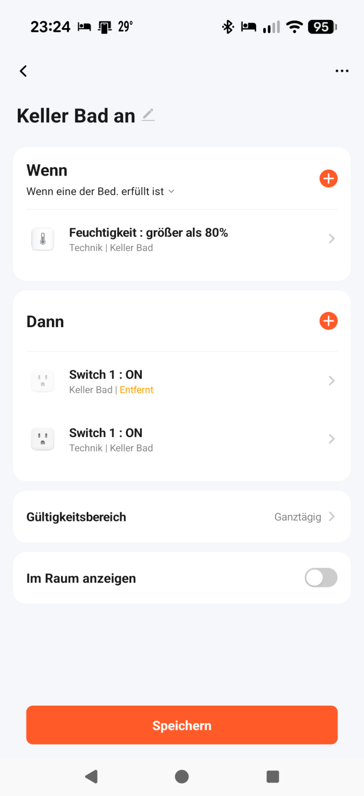
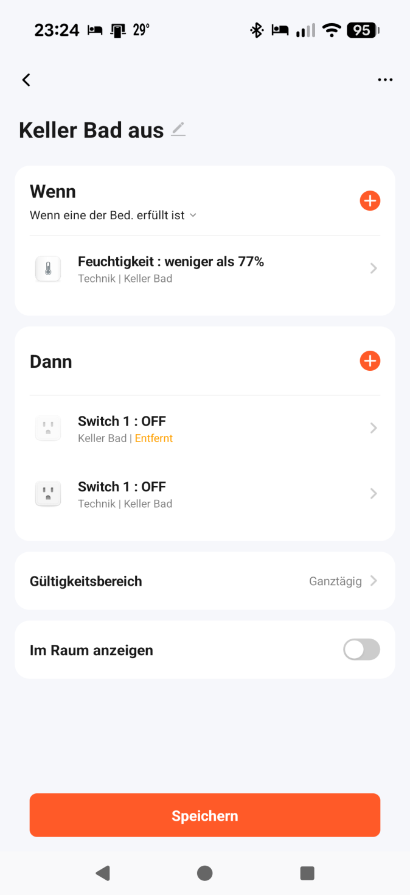
Zwei Automatisierungen in der Tuya-Smart-App: „Keller Bad an“ bei Feuchtigkeit größer als 80 %, „Keller Bad aus“ bei weniger als 77 %. Beide schalten Switch 1.
Exkurs · Wenn-Dann-Logik
Feuchtigkeit: 80 % an, 77 % aus
Sensor · Keller Bad
—
WENN
Feuchtigkeit größer als 80 %DANN Switch 1 → EIN
WENN
Feuchtigkeit kleiner als 77 %DANN Switch 1 → AUS
Switch 1 · Lüfter
AUS
Die Animation läuft beim Aufschlagen der Folie automatisch los, „nochmal“ startet sie erneut. Links die gemessene Feuchtigkeit, in der Mitte die zwei Regeln aus der Tuya-App, rechts der geschaltete Lüfter. Die Kurve ist eine echte Regelstrecke: Die Dusche bringt laufend Feuchtigkeit ein, der Lüfter zieht sie ab — aber erst nach einer Totzeit, und er läuft langsam hoch. Deshalb steigt der Wert nach dem Einschalten bei 80 % noch bis gut 82 % weiter und sinkt nach dem Abschalten bei 77 % noch bis etwa 74 % nach. Genau dieses Überschwingen ist der Grund, warum man die beiden Schaltpunkte auseinanderzieht: Das graue Totband zwischen 77 % und 80 % fängt es auf, ohne dass der Lüfter taktet. Gleiches Prinzip wie bei der Heizung, nur mit Feuchtigkeit statt Temperatur. Ende des Exkurses, weiter mit Teil 3.
TEIL 3
Systeme im Vergleich
Drei Systeme, drei Philosophien: Tuya → Zigbee → Matter.
Kapiteltrennung. Drei Systeme, drei Philosophien – wir gehen sie der Reihe nach durch: Tuya, Zigbee, Matter.
Teil 3 · Vergleich
Drei Systeme auf einen Blick
Von Cloud-abhängig und billig (Tuya) über lokal und sparsam (Zigbee) zu lokal, sparsam und herstelleroffen (Matter).
Schlecht, gut, besser. Wer das im Kopf behält, braucht sich die folgenden Detailfolien nicht zu merken.
Die Reihenfolge der drei Systeme ist bewusst gewählt: schlecht, gut, besser. Als Nächstes die Vergleichsmatrix auf einer Folie.
Teil 3 · Vergleich
Vergleichsmatrix: Tuya, Zigbee, Matter
Dimension
TuyaCloud, billig
Zigbeelokal, sparsam
Matterlokal, offen
Lokaler BetriebLäuft die Schaltung im Haus?
neinSteuerung über die Tuya Cloud; nur Gateway-Szenen auch lokal
jaBefehle direkt im Haus verarbeitet
jakomplett lokal im Heimnetzwerk
Cloud-ZwangWas passiert ohne Internet?
jaFernsteuerung und viele Routinen fallen aus
neinfunktioniert unabhängig vom Internet
neinkeine Cloud für die Schaltung nötig
HerstelleroffenMit anderen Ökosystemen kombinierbar?
neinMarken mischen ja, Ökosysteme nein — alles bleibt an der Tuya-Plattform
teilweise„Kompatibilitäts-Inseln“: nicht jedes Gerät lässt sich an jeder Zentrale anlernen
jaMulti-Admin: Apple Home, Google Home, Alexa, SmartThings parallel
Hub / Zentrale nötigWie teuer ist der Einstieg?
kaumbei WLAN-Geräten keiner; nur für Zigbee-Geräte ein Tuya-Gateway
jazwingend: Bridge oder Zigbee-USB-Stick
jaMatter-Controller; für Thread zusätzlich ein Border Router
EnergiebedarfWie lange hält eine Batterie?
hochWLAN verbraucht mehr Strom und belastet den Router
niedrigBatteriesensoren oft jahrelang mit einer Knopfzelle
gemischtniedrig über Thread, höher über WLAN
PreisniveauWas kostet die Hardware?
günstiggünstige Geräte in großer Auswahl
günstiggünstig
höheraktuell meist teurer als Tuya oder reines Zigbee
Stärken insgesamtVerteilung über die 6 Dimensionen
2gut
0ok
4schlecht
4gut
2ok
0schlecht
3gut
2ok
1schlecht
Diese Folie fasst die früheren Detailfolien zu Tuya, Zigbee und Matter zusammen; diese sind entfallen, ihr Inhalt steht am Ende dieser Notiz. Alle sechs Kriterien auf einer Folie, damit pro Zeile sofort sichtbar ist, wer vorn liegt. Die Werte sind ausschließlich aus den Vorteile/Nachteile-Folien der drei Systeme abgeleitet, es sind keine zusätzlichen Daten hinzugefügt. Zu den Zeilen im Detail: Lokaler Betrieb — Tuya nein, Steuerung läuft über die Tuya Cloud (mit Einschränkung, siehe unten); Zigbee ja, Befehle werden direkt im Haus verarbeitet; Matter ja, Steuerung komplett lokal im Heimnetzwerk. Hub / Zentrale — Tuya bei WLAN-Geräten nein, für Zigbee-Geräte ein Tuya-Gateway; Zigbee ja, zwingend (Bridge oder Zigbee-USB-Stick); Matter ja, Matter-Controller, für Thread zusätzlich ein Thread Border Router. Cloud-Zwang — Tuya ja, ohne Internet fallen Fernsteuerung und viele Routinen aus; Zigbee nein, funktioniert unabhängig vom Internet; Matter nein, keine Cloud-Verbindung für die Schaltung nötig. Herstelleroffen — die Zeile fragt bewusst nach Ökosystemen, nicht nach Marken: Über Marken hinweg ist Tuya sogar offen, Lidl, Nedis und Luminea liegen in derselben App. Gebunden ist man an die Tuya-Plattform selbst, eine Kombination mit Apple Home oder Google Home als gleichberechtigter Steuerung gibt es nicht. Einschränkung für die Vorbereitung: Neuere Tuya-Geräte können teilweise Matter sprechen und sind dann doch einbindbar — wer danach gefragt wird, sollte das erwähnen. Zigbee teilweise, Zigbee teilweise, „Kompatibilitäts-Inseln“, Geräte verschiedener Hersteller lassen sich nicht immer an derselben Zentrale anlernen; Matter ja, garantierter Parallelbetrieb mit Apple Home, Google Home, Alexa, SmartThings („Multi-Admin“). Energiebedarf — Tuya hoch, WLAN verbraucht mehr Strom und belastet den Router; Zigbee niedrig, Batteriesensoren halten oft jahrelang mit einer Knopfzelle; Matter niedrig über Thread, höher über WLAN. Preisniveau — Tuya günstig; Zigbee günstig; Matter höher, Matter-Hardware ist aktuell meist teurer als einfache Tuya- oder reine Zigbee-Komponenten. Die Tortendiagramme unten zeigen, wie sich die sechs Bewertungen je System verteilen: Tuya 2 gut / 0 okay / 4 schlecht, Zigbee 4 / 2 / 0, Matter 3 / 2 / 1. Das ist eine Verteilung der sechs Zeilen, keine Gesamtnote. Einschränkung bei Tuya (bewusste Vereinfachung in den Zeilen „Lokaler Betrieb“ und „Cloud-Zwang“): Szenen zwischen Geräten hinter demselben Tuya-Gateway (Zigbee oder Bluetooth) können als lokale Verknüpfung auch ohne Internet laufen, wenn sie dafür eingerichtet sind; reine WLAN-Geräte ohne Gateway laufen über die Cloud. Die Zeile bleibt bei „nein“, weil die normale Steuerung per App und der Fernzugriff über die Cloud gehen; mit Home Assistant (lokale Integration) lässt sich Tuya ebenfalls teilweise lokal betreiben. Quellen (Stand 28.10.2026, nur Gerätehandbuch und Blog, keine Tuya-Entwicklerdokumentation): https://privatehomelab.com/tuya-smart-life-automation-local-vs-cloud-linkage-offline-2/ · https://promotion.tuya.com/solution/CMa8uway62lgeq-en . — Inhalte der entfallenen Detailfolien: Tuya liefert die Software-Infrastruktur für tausende White-Label-Hersteller (wie Lidl Livarno, Luminea, Nedis); gesteuert meist über die Tuya Smart oder die Smart Life App. Vorteile: riesige Produktauswahl, extrem viele, sehr günstige Geräte (Leuchtmittel, Stecker, Kameras); einfacher Einstieg über einfaches WLAN, oft keine teure separate Zentrale (Bridge/Hub) nötig; gute App-Funktionen mit umfangreichen Automatisierungsmöglichkeiten und Szenen. Nachteile: Cloud-Zwang, ohne Internet oder Tuya-Cloud fallen Routinen und Fernsteuerung aus (Hauptkritikpunkt); Datenschutz, globale Cloud-Plattform, Nutzungsdaten wandern über externe Server; WLAN-Überlastung, viele günstige WLAN-Geräte können den Router schnell überlasten. Die drei Tuya-Kommunikationswege: Standard-Weg (WLAN-Geräte): Smartphone App → Internet → Tuya Cloud → Internet/Router → Tuya WLAN-Gerät. Brücken-Weg (Zigbee/Bluetooth-Geräte): Smartphone App → Internet → Tuya Cloud → Internet → Tuya Zigbee Gateway → Lokaler Funk → Zigbee-Sensor. Drittanbieter-Weg (Sprachassistenten): Sprachbefehl („Alexa...“) → Amazon/Google Cloud → Cloud-to-Cloud Kopplung → Tuya Cloud → Endgerät. Alle drei Wege führen über die Tuya Cloud; nur die letzte Strecke vom Gateway zum Zigbee-Sensor ist lokaler Funk. Zigbee ist ein etablierter, energiesparender Funkstandard, genutzt u. a. von Philips Hue, IKEA Home smart und Aqara — der Gegenentwurf zu Tuya. Vorteile: lokaler Betrieb, Befehle direkt im Haus verarbeitet, extrem schnell, unabhängig vom Internet; Mesh-Netzwerk, Dauerstrom-Geräte (z. B. Lampen) wirken als Signalverstärker, Reichweite steigt enorm; extrem energiesparend, Batteriesensoren halten oft jahrelang mit einer Knopfzelle. Nachteile: zwingend ein Gateway, z. B. Philips Hue Bridge oder Zigbee-USB-Stick; Kompatibilitäts-Inseln, Geräte verschiedener Hersteller lassen sich nicht immer an derselben Zentrale anlernen — das löst später Matter. Matter ist der neueste, vom Branchenkonsortium (Apple, Google, Amazon, Samsung u. a.) entwickelte Standard und soll die Fragmentierung des Smart-Homes endgültig beenden; Transportwege: bestehendes WLAN oder das moderne, energiesparende Thread-Funknetzwerk. Vorteile: herstellerübergreifend, Apple Home, Google Home, Amazon Alexa, Samsung SmartThings parallel („Multi-Admin“); zukunftssicher und lokal, komplett lokal im Heimnetzwerk, schnell und ausfallsicher, ohne Cloud-Zwang; hohe Sicherheit, moderne Verschlüsselung und Sicherheitsmechanismen bei der Geräte-Inbetriebnahme. Nachteile: noch in Entwicklung, Geräteklassen wie komplexe Kameras oder Spezial-Sensoren nicht perfekt abgedeckt; Updates der Hersteller verzögern sich oft; Thread-Geräte brauchen einen kompatiblen „Thread Border Router“, Beispiele: neuerer Apple HomePod, Google Nest Hub, Amazon Echo; höherer Preis, Matter-Hardware aktuell meist teurer als einfache Tuya- oder reine Zigbee-Komponenten.
Tuya
System-Architektur & Kommunikationswege
Erkenntnis
Alle primären Wege laufen zwingend über die Tuya Cloud. Ohne Internet verlieren App, WLAN-Geräte und Gateway die Verbindung — einzig die Strecke vom Gateway zum Zigbee-Endgerät bleibt rein lokal.
Eigene Darstellung nach der Tuya-Entwicklerdokumentation (developer.tuya.com): „Zigbee Gateway“ und „Tuya MQTT Standard Protocol“
Grafik ist jetzt nativ auf der Folie, nicht mehr als Screenshot — dadurch skaliert sie sauber und folgt dem Theme. Rot heißt: Der Weg verlässt das Haus. Grün heißt: bleibt im Haus. Alle primären Wege laufen über die Tuya Cloud; ohne Internet verlieren App und WLAN-Geräte die Verbindung. Nur die Strecke vom Gateway zum Zigbee-Endgerät ist rein lokal. Quellenlage: Die Architektur ist durch Tuyas eigene Entwicklerdokumentation gedeckt — Geräte ohne eigenen Internetzugang (Zigbee, Bluetooth) hängen als Sub-Devices an einem Gateway, das selbst per MQTT mit der Cloud spricht. Belege: developer.tuya.com, Seiten „Zigbee Gateway“ und „Tuya MQTT Standard Protocol“.
Zigbee
Architektur & lokaler Kommunikationsgraph
Erkenntnis
Geräte am Dauerstrom arbeiten als Router und reichen Signale weiter — das vergrößert die Reichweite. Der Batterie-Sensor bleibt Endgerät und spart Strom. Der gesamte Verkehr verlässt das Haus nie.
Eigene Darstellung nach der Zigbee-Spezifikation der Connectivity Standards Alliance (Geräterollen Coordinator, Router, End Device)
Grafik ist jetzt nativ auf der Folie statt als Screenshot. Grün umrandet: alles, was ohne Internet funktioniert. Der Mesh braucht kein Internet; Router (Lampe, Steckdose) hängen am Dauerstrom und leiten weiter, der Batterie-Sensor ist Endgerät und schläft dazwischen. Die App erreicht die Zentrale über das lokale IP-Netz. Quellenlage: Die drei Geräterollen Coordinator, Router und End Device sind in der Zigbee-Spezifikation der Connectivity Standards Alliance definiert; für den Vortrag genügt der Verweis darauf.
Teil 3 · Gliederung
Matter und Thread: zwei Dinge, die oft verwechselt werden
Matter ist die Sprache, Thread ist der Funk. Sie konkurrieren nicht — sie arbeiten auf verschiedenen Ebenen.
Matter
Die Sprache · Anwendungsebene
Legt fest, was ein Gerät sagen kann: „Lampe an“, „Thermostat auf 21 °C“. Weil alle dieselben Begriffe nutzen, versteht jede Zentrale jedes Gerät.
Setzt auf IP auf und läuft daher über WLAN, Ethernet oder Thread.
Matter ist kein eigener Funkstandard.
Thread
Der Funk · Übertragungsebene
Legt fest, wie die Nachricht ankommt: ein stromsparendes Mesh-Netz, in dem Geräte am Dauerstrom die Signale weiterreichen — technisch ähnlich wie Zigbee.
Ideal für Lampen und Batteriesensoren, die jahrelang halten sollen.
Thread allein sagt nichts darüber, was die Geräte sprechen.
1Der ControllerDas Gehirn: führt Automatisierungen aus, Multi-Admin
2Der Thread Border RouterDie Brücke zwischen Thread-Funk und WLAN/LAN
3Die EndgeräteMatter über WLAN oder über Thread
Gliederungsfolie für den Matter-Teil. Kernsatz: Matter ist die Sprache (Anwendungsebene, sagt WAS gesprochen wird), Thread ist der Funk (Übertragungsebene, sagt WIE es ankommt). Deshalb ist „Matter oder Thread?“ die falsche Frage — ein Thread-Gerät spricht in aller Regel Matter über Thread. Matter setzt auf IP auf und läuft auch über WLAN oder Ethernet; Thread ist ein Mesh wie Zigbee, in dem Dauerstrom-Geräte weiterleiten und Batteriegeräte Endpunkte bleiben. Die drei nummerierten Punkte unten sind die Agenda der folgenden Folien: erst der Controller, dann der Thread Border Router, dann die Endgeräte — und danach der Ablauf eines typischen Schaltbefehls, der alle drei zusammenbringt.
Matter
Der Matter-Controller (Die Steuerzentrale)
Funktion
Das Gehirn, das die Geräte steuert, Automatisierungen ausführt und die Schnittstelle zu deiner App bildet. Beispiele sind ein Apple TV 4K, ein Google Nest Hub oder ein Amazon Echo.
Besonderheit („Multi-Admin“)
Ein Matter-Netzwerk kann mehrere Controller gleichzeitig haben. Dieselbe Lampe lässt sich parallel über Apple Home (iPad) und Google Home (Android-Tablet) steuern.
Die Controller synchronisieren den Gerätestatus direkt lokal untereinander. Das ist der Kern von Multi-Admin.
Matter
Der Thread Border Router (Die Funk-Brücke)
Viele moderne, kleine Matter-Geräte funken nicht über das stromhungrige WLAN, sondern über das effiziente Thread-Funknetzwerk.
Der Thread Border Router verbindet das Thread-Netzwerk nahtlos mit deinem Heimnetzwerk (WLAN/LAN).
Oft ist diese Funktion direkt im Matter-Controller eingebaut (z. B. im Apple TV oder Nest Hub).
Der Border Router ist die Brücke zwischen Thread-Funknetz und normalem Heimnetz. Oft steckt er schon im Controller.
Matter
Die Matter-Endgeräte (WLAN oder Thread)
Matter-über-WLAN
Größere Geräte mit hohem Stromverbrauch oder Dauerstrom (z. B. smarte Steckdosen, Haushaltsgeräte) nutzen dein normales WLAN. Sie sprechen Matter direkt über deinen Router.
Matter-über-Thread (Router & Endpoints)
Stromsparende Geräte (Lampen, Sensoren) bauen untereinander ein stabiles Thread-Mesh-Netzwerk auf – ähnlich wie bei Zigbee. Lampen leiten Signale weiter (Router), Batterie-Sensoren senden nur bei Änderungen (Endpoints).
Große Stromverbraucher nutzen WLAN, kleine, sparsame Geräte Thread. Das Thread-Mesh funktioniert ähnlich wie bei Zigbee.
Matter
Ablauf eines typischen Schaltbefehls
Matter basiert auf IP wie dein Computer oder Smartphone: Alle Geräte sprechen „dieselbe Sprache“ – egal ob per Kabel, WLAN oder Thread.
Schritt 1Smartphone-Appz. B. Apple Home
Lokales WLAN
Schritt 2Controller & Border Routerübersetzt vom WLAN in den Thread-Funk
Thread-Funk
Schritt 3Lampe als Thread-Routeram Dauerstrom, reicht das Signal weiter
Thread-Funk
Schritt 4Heizkörperthermostatführt den Befehl aus
Der gesamte Weg bleibt im Haus — keine Cloud beteiligt
Der Ablauf als Prozesskette, Schritt für Schritt einblenden. Beschriftet sind die Übergänge, denn darum geht es: von der App über lokales WLAN zum Controller, der zugleich Thread Border Router ist; von dort per Thread-Funk zur Lampe, die am Dauerstrom hängt und deshalb als Thread-Router weiterleitet; von der Lampe per Thread-Funk zum Heizkörperthermostat, das den Befehl ausführt. Der gesamte Weg bleibt lokal, keine Cloud beteiligt.
Teil 3
Lokal vs. Cloud: Der entscheidende Vorteil
Zigbee
Dieser gesamte Datenverkehr verlässt niemals dein Haus. Selbst bei Störung des Internetanbieters oder ohne Strom am Router läuft der Funkgraph autark weiter.
Matter
Wie bei Zigbee bleibt die gesamte Kommunikation zu 100 % lokal, ganz ohne Cloud-Verbindung. Das Zigbee-Problem getrennter Bridges (z. B. Hue und Aqara) entfällt.
Und Tuya?
Genau umgekehrt: Alle primären Wege laufen über die Tuya Cloud. Ohne Internet verlieren App und WLAN-Geräte die Verbindung.
Bei Matter fließen alle Daten nahtlos durch dieselbe lokale Netzwerkstruktur. Tuya ist das Gegenteil (siehe Folien zu den Kommunikationswegen). Das ist der Übergang zu Teil 4. Die frühere Abschlussfolie mit der wiederholten Vergleichsmatrix ist entfallen; die Matrix steht vollständig auf der Folie „Vergleichsmatrix: Tuya, Zigbee, Matter“.
Teil 3
Merksatz
Je weiter rechts, desto unabhängiger vom Internet und vom Hersteller — und desto teurer in der Anschaffung.
Von Tuya über Zigbee zu Matter: mehr Unabhängigkeit vom Internet und vom Hersteller, dafür höherer Preis. Übergang zu Teil 4.
TEIL 4
Risiken
Vier Risikoebenen, die bei der Systemwahl zusammen betrachtet werden müssen
Die Ebenen laut Quelle: 1. Cloud-Abhängigkeit & Datenschutz — wohin gehen die Daten? 2. IT-Sicherheit — wer kommt von außen rein? 3. Lebensdauer — was passiert, wenn der Hersteller abschaltet?
Teil 4 · Risiken
Gefahren und Fallstricke von Cloudanbietern
Warum der Serverstandort wichtig, aber nicht alles ist
Beim Hosting und der Cloud-Nutzung müssen Unternehmen differenzieren, wo die Daten physisch liegen und wer theoretisch darauf zugreifen kann.
Kriterium
Server in Deutschland / EU
Server in Drittländern (z. B. USA)
Drittlandtransfer
Nein. Kein Transferrisiko im Sinne der Art. 44 ff. DSGVO.
Ja. Datenübermittlung erfordert rechtliche Absicherung (z. B. Angemessenheitsbeschluss wie das EU-US Data Privacy Framework oder Standardvertragsklauseln).
Rechtlicher Zugriff
Lokale Sicherheitsgesetze greifen.
US-Behörden können über Gesetze wie den CLOUD Act Datenzugriff verlangen.
Herausforderung
Nutzt man US-Anbieter (wie AWS oder Microsoft) mit Servern in Frankfurt, bleibt das CLOUD-Act-Risiko über den Mutterkonzern bestehen.
Das Datenschutzniveau gilt grundsätzlich als unsicherer, sofern keine speziellen Garantien greifen.
Ersetzt den früheren Screenshot durch echten Text auf der Folie, Inhalt unverändert. Die drei Zeilen einzeln einblenden. Kernpunkt ist die letzte Zeile links: Der Serverstandort allein genügt nicht — bei einem US-Anbieter mit Rechenzentrum in Frankfurt bleibt das CLOUD-Act-Risiko über den Mutterkonzern bestehen. Rechtlicher Rahmen: Art. 44 ff. DSGVO für den Drittlandtransfer, Absicherung über Angemessenheitsbeschluss (EU-US Data Privacy Framework) oder Standardvertragsklauseln.
Teil 4 · Risiken
Drittland-Risiko am Beispiel China
Das Hosten personenbezogener Daten in China ist nach der DSGVO rechtlich extrem riskant: Es gibt keinen Angemessenheitsbeschluss, und die irische Aufsicht verhängte 2025 gegen TikTok 485 Mio. € wegen Datenübermittlungen nach China, weil kein gleichwertiges Schutzniveau nachgewiesen wurde.
Quellen: Irische Datenschutzbehörde (DPC), Entscheidung gegen TikTok, 02.05.2025 · EU-Kommission, Liste der Angemessenheitsbeschlüsse · Irish High Court, [2026] IEHC 347 (03.06.2026)
Foto: Sou Jest, Unsplash
Vollbild-Foto mit dunklem Balken hinter dem Text. Drei Gründe auf der nächsten Folie. Quellen (Stand der Recherche, vor dem Vortrag gegenprüfen): (1) Irische Datenschutzbehörde (DPC), Entscheidung gegen TikTok vom 30.04.2025, veröffentlicht am 02.05.2025: Bußgeld insgesamt 530 Mio. €, davon 485 Mio. € wegen Verstoßes gegen Art. 46 Abs. 1 DSGVO bei den Übermittlungen nach China; TikTok habe nicht verifiziert, garantiert und nachgewiesen, dass die aus China abrufbaren Daten ein im Wesentlichen gleichwertiges Schutzniveau genießen. TikTok hat die Entscheidung angefochten. Stand 28.10.2026 (Recherche, vor dem Vortrag gegenprüfen): Der irische High Court (Commercial, Richter Mulcahy) hat am 03.06.2026 ([2026] IEHC 347) die Feststellungen zu Art. 46 Abs. 1 und Art. 13 Abs. 1 lit. f DSGVO im Wesentlichen bestätigt; die Bußgelder bleiben dem Grunde nach bestehen, über die Höhe entscheidet ein gesondertes, noch ausstehendes Urteil. Die Anordnung, künftige Übermittlungen nach China auszusetzen, geht zur Neuprüfung an die DPC zurück (laut Irish Times vom 30.06.2026 liest die DPC das Urteil und entscheidet dann über das weitere Vorgehen); bei den technischen Maßnahmen („Project Clover“) folgte das Gericht der DPC nicht in allen Punkten. Quellen zum Urteil, nur Zusammenfassungen, der Volltext wurde nicht geprüft und die Tenorbeschreibung spricht teils von einem Vorschlag des Gerichts: https://www.casemine.com/judgement/uk/6a31a47b906f3c617eb52b3e · https://www.freevacy.com/news/irish-high-court/irish-high-court-upholds-dpcs-tiktok-decision-orders-review-of-corrective-measures/7462 · https://www.irishtimes.com/ireland/2026/06/30/data-protection-commission-reconsidering-tiktok-data-transfer-ban-after-court-ruling/ . Beträge (530 Mio. € gesamt, 485 Mio. € Art. 46 Abs. 1, 45 Mio. € Art. 13 Abs. 1 lit. f; Pressemitteilung vom 02.05.2025) am 28.10.2026 auf der DPC-Seite bestätigt: https://www.dataprotection.ie/en/news-media/latest-news/irish-data-protection-commission-fines-tiktok-eu530-million-and-orders-corrective-measures-following · gleichlautend die Meldung des Europäischen Datenschutzausschusses: https://www.edpb.europa.eu/news/irish-supervisory-authority-fines-tiktok-eu530-million-and-orders-corrective-measures_en (2) Kein Angemessenheitsbeschluss: Die Liste der EU-Kommission enthält China nicht (am 28.10.2026 geprüft: 17 Einträge, jüngste Meldung auf der Seite vom 23.07.2026): https://commission.europa.eu/law/law-topic/data-protection/international-dimension-data-protection/adequacy-decisions_en Bewusst abgeschwächt: Die frühere Formulierung der Folie lautete „rechtlich extrem riskant und in den allermeisten Fällen unzulässig“. Für „in den allermeisten Fällen unzulässig“ gibt es keine Quelle; eine Übermittlung ist mit geeigneten Garantien (Art. 46 DSGVO) und Prüfung grundsätzlich möglich, bei China aber sehr schwer zu rechtfertigen. Die DPC-Entscheidung betrifft den Fall TikTok und ist keine pauschale Verbotsregel.
Teil 4 · Risiken
Drittland-Risiko China: drei Gründe
1
Kein Angemessenheitsbeschluss
Die Europäische Kommission stuft das Datenschutzniveau in China nicht als gleichwertig mit dem europäischen Standard ein.
FolgeDer Transfer braucht eine eigene Rechtsgrundlage.
Quelle: EU-Kommission, Liste der Angemessenheitsbeschlüsse (China nicht enthalten)
2
Zugriff durch Behörden
Artikel 7 des chinesischen Nachrichtendienstgesetzes (Geheimdienstgesetz) verpflichtet Organisationen und Bürger, die staatliche Nachrichtendienstarbeit zu unterstützen.
FolgeSchutz vor staatlichem Zugriff ist kaum zu garantieren.
Quelle: Nachrichtendienstgesetz der VR China (2017), Art. 7 · Übersetzung: China Law Translate
3
Standardvertragsklauseln tragen nicht
Das zwingende Transfer Impact Assessment (TIA) muss prüfen, ob das Recht des Drittlandes die Einhaltung der SCCs aushebelt.
FolgeDie irische Aufsicht sah 2025 im Fall TikTok kein gleichwertiges Schutzniveau nachgewiesen.
Stand der Quellen
TikTok hat die DPC-Entscheidung angefochten; der irische High Court bestätigte die Verstöße im Juni 2026 im Wesentlichen, über die Höhe des Bußgelds und die Folgemaßnahmen ist noch nicht abschließend entschieden. Ein Einzelfall, kein pauschales Verbot.
Drei gleich gebaute Karten: oben der Befund, unten jeweils die Folge — dadurch lesen sich die Punkte als ein Satz Argumente statt als drei verschieden lange Texte. Die Formulierungen sind dem Original entnommen und nicht verschärft. Ergänzende Details aus der Ursprungsfassung: Beim Zugriffsrisiko ging es ausdrücklich um das Geheimdienstgesetz; bei den SCCs darum, dass die chinesischen Überwachungsgesetze der Grund für das negative TIA-Ergebnis sind. Quellen (vor dem Vortrag gegenprüfen): Karte 1: Liste der Angemessenheitsbeschlüsse der EU-Kommission, China nicht enthalten: https://commission.europa.eu/law/law-topic/data-protection/international-dimension-data-protection/adequacy-decisions_en Karte 2: Nachrichtendienstgesetz der VR China (2017), Art. 7, in der Übersetzung von China Law Translate: https://www.chinalawtranslate.com/en/national-intelligence-law-of-the-p-r-C-2017/ Achtung: Im Gesetzentwurf stand die Kooperationspflicht in Art. 6, in der verabschiedeten Fassung in Art. 7; die Reichweite der Pflicht ist unter Juristen umstritten (Jeremy Daum, China Law Translate: nicht klar, dass aktive Informationsbeschaffung verlangt wird). Den amtlichen Text des Nationalen Volkskongresses gegenprüfen. Karte 3: DSGVO Art. 44 bis 46; EuGH, Urteil vom 16.07.2020, C‑311/18 (Schrems II); EDSA-Empfehlungen 01/2020, Version 2.0 vom 18.06.2021: https://www.edpb.europa.eu/our-work-tools/our-documents/recommendations/recommendations-012020-measures-supplement-transfer_en ; Standardvertragsklauseln, Durchführungsbeschluss (EU) 2021/914, Klausel 14; dazu die DPC-Entscheidung gegen TikTok (siehe Folie davor). Am 28.10.2026 geprüft: Version 2.0 der EDSA-Empfehlungen 01/2020 ist laut EDSA-Dokument am 18.06.2021 angenommen; Art. 7 des Nachrichtendienstgesetzes lautet in der Übersetzung von China Law Translate „All organizations and citizens shall support, assist, and cooperate with national intelligence efforts in accordance with law“ (über Suchtreffer bestätigt, die Seite selbst war beim Abruf nicht erreichbar). DSGVO-Artikel, das Urteil C‑311/18 und Klausel 14 wurden nicht im Volltext geprüft. „TIA“ steht nicht im Gesetz; die Prüfpflicht ergibt sich nach Sekundärquellen aus Schrems II und Klausel 14. Zum Stand im Fall TikTok siehe die Notiz der Folie davor (High Court, 03.06.2026). Ersetzt: Die frühere Folge von Karte 3 „Deutsche Aufsichtsbehörden kommen fast immer zu einem negativen Ergebnis“ war nicht belegt (keine Stellungnahme der Datenschutzkonferenz gefunden) und wurde durch die belegte Aussage zur irischen Aufsicht ersetzt. Frühere Formulierung von Karte 2: „Artikel 7 des chinesischen Geheimdienstgesetzes verpflichtet dortige Organisationen und Unternehmen zur Kooperation mit den staatlichen Sicherheitsbehörden.“
Bezug zum Smart Home
Tuya: Serverstandort wird praktisch relevant
Tuya ist eine globale Cloud-Plattform: Nutzungsdaten wandern über externe Server. Genau hier wird die Frage des Serverstandorts praktisch relevant.
Rückbezug auf den Tuya-Teil. Überleitung zur Leitfrage: Welche Daten verlassen das Haus?
Drei Fragen, die jedes System beantworten muss
Welche Daten verlassen das Haus?
Wohin gehen sie?
Wer darf darauf zugreifen?
Leitfrage für den Rest von Teil 4. Zuerst klären, welche Daten überhaupt anfallen.
Leitfrage
Welche Daten verlassen das Haus?
Sechs Datenarten, die in diesem Vortrag vorkommen — und was sie im Klartext über die Bewohner verraten.
Temperatur & Luftfeuchtigkeit pro Raum
Verrätwelche Räume genutzt werden
Schaltvorgänge von Licht und Steckdosen
VerrätTagesrhythmus, Aufstehen, Zubettgehen
Fenster- und Türkontakte
Verrätwann niemand zu Hause ist
Anwesenheit / Geofencing
VerrätStandort der Bewohner
Energieverbrauch über Monate
VerrätUrlaubszeiten, Haushaltsgröße
Kamerabilder vom Hauseingang
VerrätGesichter, Besucher, Nachbarn
Die beiden früheren Folien auf einer, sechs Karten in zwei Reihen, einzeln einblendbar. Fundstellen im Vortrag: Temperatur und Luftfeuchtigkeit in der Tuya-Automatisierung („Keller Bad“) sowie bei Heizkreis und tado°; Schaltvorgänge bei Xiaomi Home und Google Home; Fenster- und Türkontakte in den Gewerke-Folien der drei Fälle; Anwesenheit/Geofencing bei tado° („HOME Geofencing“); Energieverbrauch im Energiemonitoring; Kamerabilder bei „Kamera Hauseingang“.
Leitfrage
Die Antwort hängt allein an der Architektur, nicht am Marketing
Lokal
Läuft die Schaltung lokal (Zigbee, Matter, Home Assistant), verlassen diese Daten das Haus gar nicht.
Cloud
Läuft sie über eine Cloud (Tuya, Xiaomi, Google), verlassen sie es bei jedem Schaltvorgang.
Kernaussage zur Leitfrage: Entscheidend ist die Architektur, nicht das Marketing.
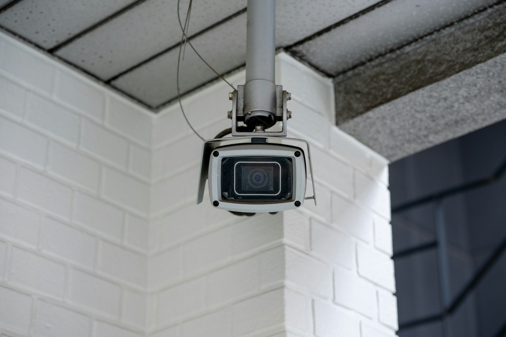
Praxis-Hinweis
Kameras erfassen regelmäßig auch Dritte
Bei Kameras ist zusätzlich zu beachten, dass regelmäßig auch Dritte erfasst werden: Besucher, Nachbarn, Postboten.
Das ist keine neue Rechtsaussage dieses Vortrags, sondern der Punkt, an dem die Verantwortung des Betreibers beginnt.
Foto: Turquo Cabbit, Unsplash
Bild links, Text rechts. Vor dem Vortrag mit einer belastbaren Quelle unterfüttern. Der Bildnachweis unten ist Teil der Unsplash-Höflichkeit, rechtlich nicht zwingend.
Teil 4 · Risiken
IT-Sicherheit: die zweite Risikoebene
Datenschutz fragt: Wer darf die Daten sehen? IT-Sicherheit fragt: Wer kommt ungefragt rein?
Der Vortrag behandelte bisher nur die erste Frage. Es folgen die drei häufigsten Einfallstore im Heimnetz.
Die drei häufigsten Einfallstore im Heimnetz
Offene Ports / Portweiterleitung
Wer die Kamera oder das Dashboard „von unterwegs“ erreichbar machen will und dafür im Router einen Port nach außen öffnet, stellt das Gerät dem gesamten Internet zur Verfügung.
Suchmaschinen für offene Geräte finden solche Ports binnen Stunden
Richtiger Weg: VPN ins Heimnetz oder der Reverse-Proxy des Herstellers
Keine direkte Portweiterleitung
Einfallstor 1 von 3. Das Schaubild ist selbst gezeichnet, nicht aus dem Netz übernommen — oben der rote Weg: eine Portweiterleitung schlägt ein Loch in die Router-Firewall, durch das jeder Scanner direkt auf Kamera oder Dashboard kommt. Unten der grüne Weg: ein VPN-Tunnel ins Heimnetz, ohne offenen Port. Allgemein anerkannter Sicherheitsgrundsatz; Beleg z. B. BSI-Empfehlungen zu Smart Home.
Die drei häufigsten Einfallstore im Heimnetz
Fehlende Firmware-Updates
Billiggeräte erhalten oft nur wenige Monate Updates, manche nie
Eine bekannte Lücke in einem Gerät, das nie wieder ein Update sieht, bleibt für die gesamte Nutzungsdauer offen
Vor dem Kauf prüfen: Gibt es eine Update-Zusage, und wie lange?
BleepingComputerMärz 2025 · IT-Sicherheit
Akira-Ransomware verschlüsselt Firmennetz — über eine Webcam
Als die Schutzsoftware auf den Windows-Rechnern den Verschlüsselungstrojaner stoppte, durchsuchten die Angreifer das Netz nach einem anderen Weg. Sie fanden eine ungepatchte Überwachungskamera mit bekannten kritischen Sicherheitslücken, die auf einem schlanken Linux lief und auf der keine Schutzsoftware installiert werden konnte. Über diese Kamera verschlüsselten sie die Dateifreigaben im gesamten Netzwerk. Weil niemand das Gerät überwachte, fiel der auffällige Datenverkehr der IT-Abteilung nicht auf. Analyse der Sicherheitsfirma S-RM.
Einfallstor 2 von 3. Der Zeitungsausschnitt ist der Beleg für genau diese Folie: Ein Gerät ohne Updates wird zum Einstiegspunkt ins Netz. Ablauf des Falls: Die Angreifer waren über einen exponierten Fernzugang bereits im Netz, ihr Verschlüsselungstrojaner wurde auf den Windows-Rechnern aber von der Schutzsoftware blockiert. Daraufhin scannten sie das Netz, fanden eine ungepatchte Überwachungskamera mit bekannten kritischen Lücken, die auf einem schlanken Linux lief, und verschlüsselten über dieses Gerät die Dateifreigaben. Zwei Dinge kamen zusammen: fehlende Updates und fehlende Überwachung des Geräts. Quelle: BleepingComputer, März 2025, nach einer Analyse der Sicherheitsfirma S-RM; derselbe Fall wurde unter anderem von SecurityAffairs und ThaiCERT aufgegriffen. Allgemein anerkannter Sicherheitsgrundsatz; Beleg z. B. BSI-Empfehlungen zu Smart Home.
Die drei häufigsten Einfallstore im Heimnetz
Botnetze aus Billigkameras
Unsichere Kameras und Rekorder mit Standardpasswörtern werden massenhaft gekapert und für Angriffe missbraucht. Das Gerät funktioniert dabei äußerlich normal weiter — der Betreiber merkt nichts.
Gegenmittel
Standardpasswörter sofort ändern
Geräte in ein eigenes Netzsegment (Gäste-WLAN / VLAN) legen
Internetzugang für Geräte sperren, die ihn nicht brauchen
Einfallstor 3 von 3. Allgemein anerkannter Sicherheitsgrundsatz; Beleg z. B. BSI-Empfehlungen zu Smart Home.
Die praktische Relevanz
Über lokale Geräte lassen sich viele dieser Probleme einfach umgehen.
Wenn ein Gerät rein lokal arbeitet, hat es regelmäßig keinen Internetzugang und kann auch nicht gekapert werden.
Brücke zurück zu Teil 3 (lokale Systeme): Ein Gerät, das keine Cloud braucht, braucht auch keinen offenen Port — damit entfallen die eben gezeigten Einfallstore weitgehend. Danach das Lebensdauer-Risiko.
Teil 4 · Risiken
Lebensdauer-Risiko: wenn der Hersteller abschaltet
Beim Cloud-Ausfall gilt: Fällt das Internet oder die Tuya-Cloud aus, funktionieren viele Routinen und die Fernsteuerung nicht mehr. Das ist der harmlose Fall — er ist vorübergehend.
Abgrenzung: Ausfall ist vorübergehend, Abschaltung ist endgültig. Nächste Folie: der Härtefall.
Lebensdauer-Risiko
Der Härtefall: die Cloud wird abgeschaltet
Ein cloud-gebundenes Gerät ist nur so lange ein Gerät, wie der Hersteller den Server bezahlt. Wird der Dienst eingestellt — Insolvenz, Produktende, Strategiewechsel, Übernahme —, dann:
lässt sich das Gerät nicht mehr einrichten, auch nicht lokal
fällt die App aus, und mit ihr jede Automatisierung
bleibt physisch intakte Hardware zurück, die nichts mehr tut — Elektroschrank statt Elektronik
Konkrete Abschaltfälle nennt die Präsentation bewusst nicht; für den Vortrag ein belegtes Beispiel ergänzen (siehe „Offene Belege“, Punkt 8). Mechanismus ergibt sich aus den Kommunikationswegen („Ablauf eines typischen Schaltbefehls“, „Lokal vs. Cloud“).
Lebensdauer-Risiko
Kein Update, kein Workaround, keine Garantie greift.
Die Geräte sind nicht defekt, sie sind verwaist.
Pointe zum Härtefall: Hardware intakt, Funktion weg.
Lebensdauer-Risiko
Warum das das stärkste Argument für lokale Systeme ist
Cloud-gebunden
Tuya, Amazon Alexa, Google Assistant
Hersteller stellt Dienst ein: Gerät wird unbrauchbar
Internet fällt aus: Steuerung fällt aus
Investitionsschutz: an die Lebensdauer eines Serverbetriebs gebunden
Lokal
Zigbee, Matter, KNX, Home Assistant
Hersteller stellt Dienst ein: Gerät funktioniert weiter
Internet fällt aus: Steuerung läuft weiter
Investitionsschutz: an die Lebensdauer der Hardware gebunden
Gegenüberstellung in drei Zeilen: Dienst eingestellt, Internet-Ausfall, Investitionsschutz.
Lebensdauer-Risiko · Alternative
Das stärkste Argument für lokale Systeme
Faktor
Cloud-gebundenTuya, Amazon Alexa, Google Assistant
LokalZigbee, Matter, KNX, Home Assistant
Hersteller stellt Dienst ein
Unbrauchbar. Gerät wird unbrauchbar.
Läuft weiter. Gerät funktioniert weiter.
Internet fällt aus
Ausfall. Steuerung fällt aus.
Läuft weiter. Steuerung läuft weiter.
Investitionsschutz
An die Lebensdauer eines Serverbetriebs gebunden.
An die Lebensdauer der Hardware gebunden.
Alternative zur Karten-Folie davor, gleiche drei Punkte als Tabelle: Faktoren links, Cloud-gebunden und Lokal als Spalten. Dienst eingestellt, Internet-Ausfall, Investitionsschutz.
Für den Entscheider
Bei KNX wird in Jahrzehnten gerechnet
(wie beim Neubau: „hält jahrzehntelang“)
Bei einer Cloud-Plattform rechnet niemand in Jahrzehnten.
Wer eine Immobilie ausstattet, trifft damit keine Produkt-, sondern eine Zeithorizont-Entscheidung.
Schlusspunkt von Teil 4: Zeithorizont statt Produktwahl.
TEIL 5
Anbieter
Drei Blöcke, bewusst getrennt: DSGVO-konform, verbreitet aber Cloud, Praxis-Screenshots.
Block A: deutsche Anbieter, Daten bleiben im EU-Rechtsraum. Block B: die Systeme, die faktisch im Einsatz sind. Block C: was im Betrieb tatsächlich zu sehen ist. Danach folgt Home Assistant als herstellerunabhängige Zentrale, die beide Welten zusammenführt.
Gibt es deutsche Anbieter?
KLAR!
Kurze Pointe: Ja, es gibt deutsche Anbieter. Übergang zu Block A, dem DSGVO-konformen Teil.
Teil 5 · Block A · DSGVO-konform
DSGVO-konform: der Vorteil
Vorteil: Die Daten bleiben im Geltungsbereich der DSGVO.
Das Siegel steht für den Vorteil eines Anbieters im EU-Rechtsraum. Die nächste Folie sagt, was das praktisch heißt.
Teil 5 · Block A · DSGVO-konform
Was der EU-Rechtsraum praktisch heißt
Ansprechpartner
Ein Ansprechpartner im Inland.
Betroffenenrechte
Ein durchsetzbares Auskunfts- und Löschrecht.
Aufsicht
Eine Aufsichtsbehörde, die zuständig ist.
Es entsteht kein Drittlandtransfer im Sinne der Art. 44 ff. DSGVO und damit keine Absicherungspflicht über Standardvertragsklauseln oder Angemessenheitsbeschluss (siehe Tabelle im Rechtsteil). Das ist abgeleitet aus dem Rechtsteil, keine zusätzliche Rechtsaussage.
Teil 5 · Block A · DSGVO-konform
Deutsche Anbieter: AVM, tado° und Homematic IP
AVM FRITZ! Smart Home
tado°
Homematic IP
Raumklima, Licht & Schatten, Wetter & Umwelt, Sicherheit & Alarm.
AVM: Smart-Home-System von AVM, erster von vier deutschen Anbietern, die kurz gezeigt werden. tado°: Bridge und Heizkörperthermostat (schematische Zeichnung). Zum tado° gibt es weiter hinten Screenshots aus dem Betrieb. Homematic IP: Die Zeichnung zeigt, welche Funktionsbereiche abgedeckt sind. Alle drei Abbildungen sind selbst gezeichnet, keine Herstellerbilder.
Teil 5 · Block A · DSGVO-konform
Deutsche Anbieter: homee und wibutler
homee
wibutler
Einer der für uns wichtigsten deutschen Anbieter: wibutler.
Nur der Schriftzug homee (kein Logo), der vierte deutsche Anbieter in dieser Übersicht. wibutler ist einer der für uns wichtigsten deutschen Anbieter. Als Nächstes: mit welchen Herstellern wibutler zusammenarbeitet.
Partnernetzwerk im Bereich Gebäudetechnik und Smart Home: die 39 Partner der wibutler alliance.
Quelle: wibutler alliance, wibutler.com (abgerufen am 28.10.2026)
Die Folie nennt alle 39 Partner, die die Seite der wibutler alliance aufführt: https://www2.wibutler.com/en/smarte-partner/wibutler-alliance-e-v/ . Die Namen stehen auf der Seite nur als Logos; die Schreibweise ist aus den Logo-Dateien abgeleitet und sollte vor dem Vortrag mit den Logos verglichen werden, besonders „ithinx“, „NEW Energie“ und „INSTA“. Die Liste enthält neben Herstellern auch Organisationen und Dienstleister (EnOcean, FH Münster, Ubimet). Ergänzend nennt ein Messeeintrag zur Light + Building 2024, dass der wibutler pro über 350 Geräte von mehr als 40 Herstellern anbinden kann; das ist eine eigene Angabe, keine Partnerliste. Die Namen stehen als Text, nicht als Logos.
Teil 5 · Block A · DSGVO-konform
Bosch Smart Home
Deutscher Anbieter, aber cloud-gestützt. Entscheidend ist, in welchem Rechtsraum die Cloud betrieben wird.
Bosch Smart Home sendet laut dem Teil über Zentralen Daten oft in eine Cloud. Deutscher Anbieter und Cloud-Betrieb sind also keine Gegensätze. Das ist der Übergang zu Block B.
Teil 5 · Block B
Verbreitet, aber Cloud
wibutler
Zwischenfolie zum Start von Block B. Der wibutler-Schriftzug steht als Unterüberschrift für den Abschnitt; inhaltlich geht es ab hier um Cloud-Anbieter im Drittland.
Teil 5 · Block B · Verbreitet, aber Cloud
Verbreitet, aber Cloud: die Spannung
Xiaomi Home und Google Home sind genau der Fall aus Teil 4: keine deutschen Anbieter, keine lokale Steuerung, Betrieb über Konzern-Clouds außerhalb des deutschen Rechtsraums.
Warum stehen sie dann im Vortrag? Weil sie real im Einsatz sind.
Teil 4 hat Cloud-Plattformen in Drittländern als Datenschutzproblem aufgebaut. Die Screenshots stammen aus einem laufenden Haushalt. Es wäre unredlich, in Teil 4 die Cloud zu problematisieren und zu verschweigen, dass die eigene Installation sie nutzt.
Teil 5 · Block B · Verbreitet, aber Cloud
Was man bekommt und was es kostet
Block A: DSGVO-konform
Einrichtung: aufwendiger, oft Fachbetrieb
Gerätepreis: höher
Daten: bleiben im EU-Rechtsraum
Ohne Internet: je nach System möglich
Lebensdauer: an die Hardware gebunden
Block B: Cloud, Drittland
Einrichtung: Plug-and-play, App-Login
Gerätepreis: sehr günstig, riesige Auswahl
Daten: verlassen den EU-Rechtsraum
Ohne Internet: fällt aus
Lebensdauer: an den Serverbetrieb gebunden
Gegenüberstellung der beiden Welten. Zur Lebensdauer siehe die Folie zum Serverbetrieb in Teil 4.
Teil 5 · Block B · Verbreitet, aber Cloud
Eine Abwägung, keine Richtig-Falsch-Frage
Bewusst entschieden
Cloud-Geräte sind möglich, etwa für unkritische Funktionen wie Stehlampen.
Alles in einer Cloud
Wer Kamera, Türschloss und Anwesenheitsdaten in dieselbe Cloud legt, trifft eine andere Entscheidung, als er glaubt.
Das ist die ehrliche Antwort auf den Widerspruch. Teil 7 greift das als Entscheidungshilfe wieder auf.
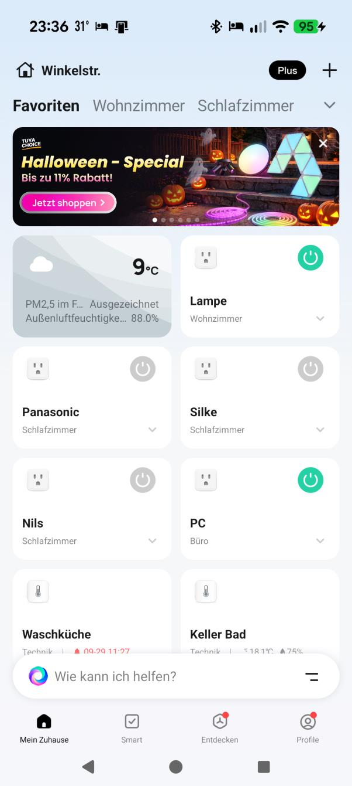
Teil 5 · Block B · Verbreitet, aber Cloud
Xiaomi Home: Startseite
Kachelansicht mit Wetter und Schaltern; aktive Schalter sind grün.
Screenshot aus dem laufenden Haushalt, oben ein Werbebanner.
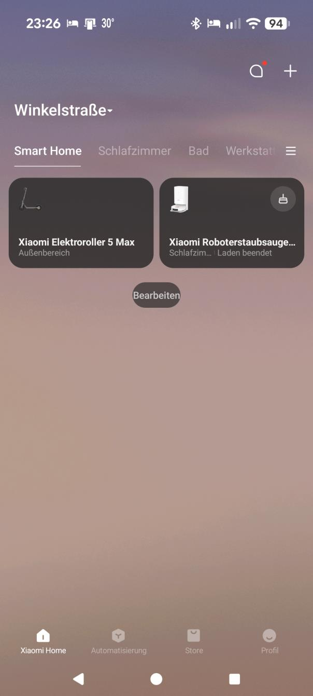
Teil 5 · Block B · Verbreitet, aber Cloud
Xiaomi Home: Geräteliste
Xiaomi Elektroroller 5 Max und Xiaomi Roboterstaubsauger.
Unten die Navigation Xiaomi Home, Automatisierung, Store, Profil.
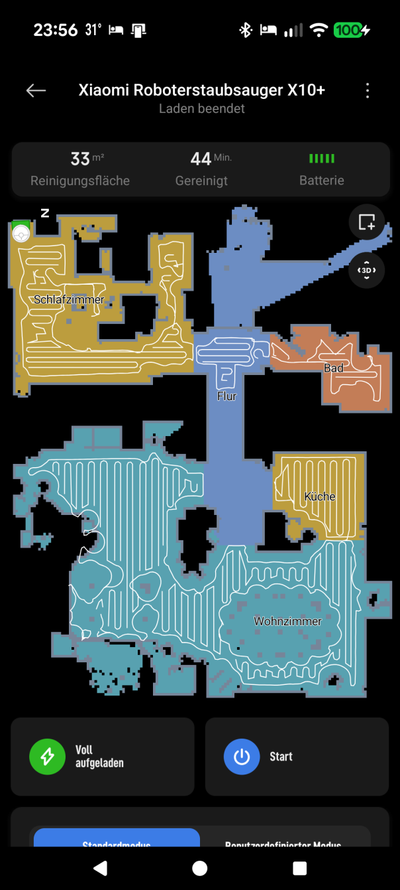
Xiaomi Home: Roboterstaubsauger
Die Karte zeigt einen vollständigen Grundriss der Wohnung. Das ist eine Datenart, die ein Cloud-Gerät nebenbei erzeugt.
Bezug zum Teil über Datenarten: Reinigungsfläche 33 m², Reinigungsdauer 44 Min. stehen oben im Bild. Der Grundriss ist das eigentlich Sensible.
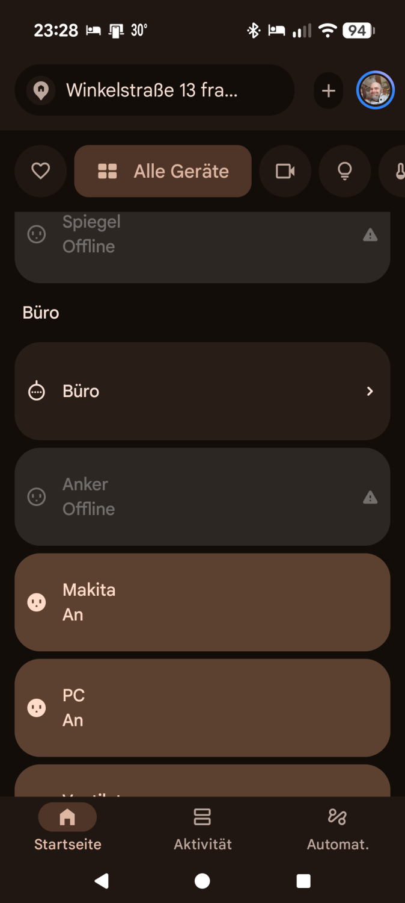
Teil 5 · Block B · Verbreitet, aber Cloud
Google Home: Startseite
Offline-Geräte sind grau und mit Warnsymbol markiert.
Navigation unten: Startseite, Aktivität, Automat.
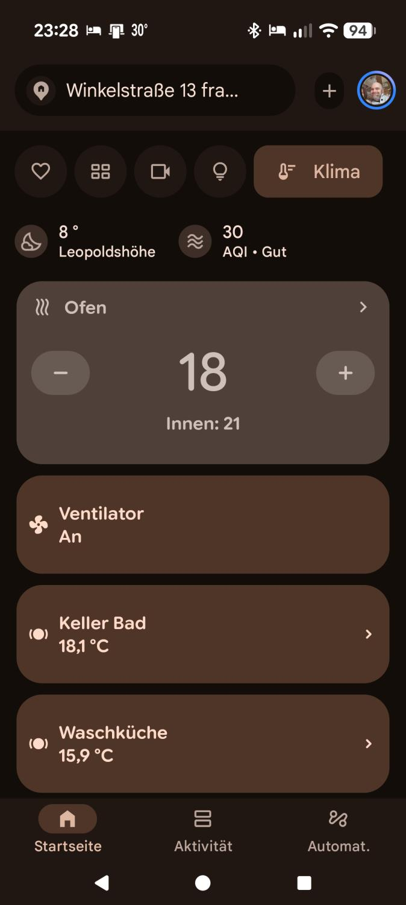
Teil 5 · Block B · Verbreitet, aber Cloud
Google Home: Klima-Ansicht
Ofen-Regler (Soll 18, Innen 21), Keller Bad 18,1 °C, Waschküche 15,9 °C.
Oben stehen 8 °C für Leopoldshöhe und ein Luftqualitätswert von 30 (AQI „Gut“).
Teil 5 · Block C · Praxis-Screenshots
Praxis-Screenshots aus dem Betrieb
Oberflächen aus einer laufenden Installation, bewusst als eigener Block.
Bosch-Heizungs-App
Heizkreis, Zeitprogramm, Energiemonitoring, Anlagen-Monitoring eines Gas-Brennwertgeräts.
Standbild einer Überwachungskamera am Hauseingang. Keine Zuordnung erkennbar.
Bewusst als eigener Block, weil sich im Original keine saubere Anbieterzuordnung aus den Folien ergibt. Bosch-Heizungs-App ist aus dem Bildinhalt abgeleitet; tado° ist im Titel benannt. Wichtig: Das Energiemonitoring ist die Datengrundlage, die für die Einsparungs-Aussage noch fehlt. Wer die Werte über zwei Heizperioden vergleicht, hat die fehlende Zahl.
Außentemperatur 8 °C, Ort Leopoldshöhe. Die Kacheln zeigen die Geräteebenen der Wärmeerzeuger-Anlage.
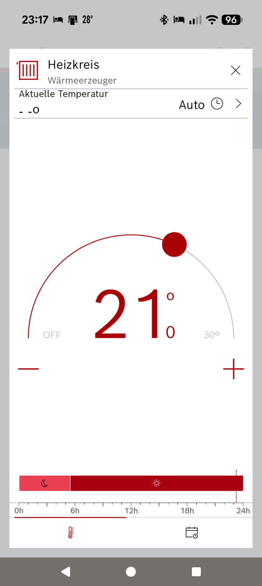
Teil 5 · Block C · Praxis-Screenshots
Heizkreis: Solltemperatur
Solltemperatur 21°, Betriebsart Auto.
Die Zeitleiste zeigt Nacht- und Tagabschnitte über 24 Stunden.
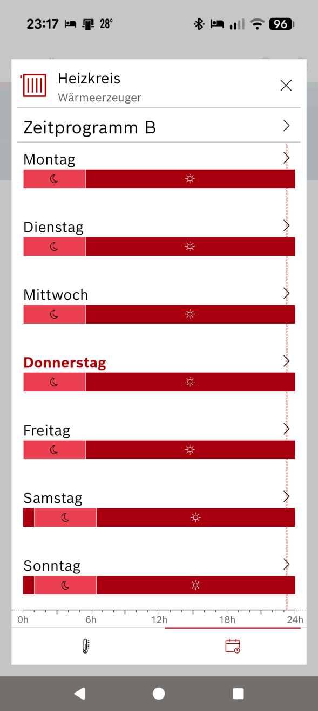
Teil 5 · Block C · Praxis-Screenshots
Heizkreis: Zeitprogramm B
Eine Zeile je Wochentag, Nacht- und Tagabschnitt über 24 Stunden.
Samstag und Sonntag weichen im Nachtabschnitt ab.
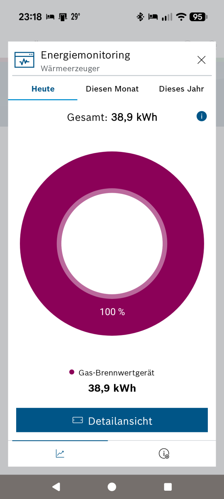
Teil 5 · Block C · Praxis-Screenshots
Energiemonitoring: Heute
Heute: 38,9 kWh, 100 % Gas-Brennwertgerät.
Der Ring ist vollständig gefüllt, weil das Gas-Brennwertgerät den gesamten Wert trägt.
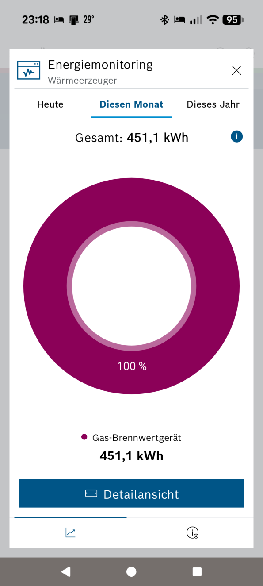
Teil 5 · Block C · Praxis-Screenshots
Energiemonitoring: Diesen Monat
Diesen Monat: 451,1 kWh, 100 % Gas-Brennwertgerät.
Aufbau wie in der Tagesansicht.
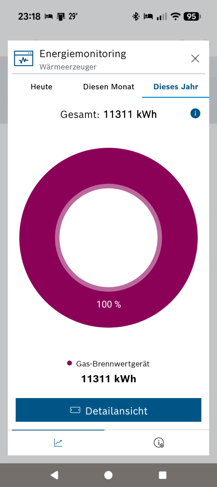
Teil 5 · Block C · Praxis-Screenshots
Energiemonitoring: Dieses Jahr
Dieses Jahr: 11311 kWh, 100 % Gas-Brennwertgerät.
Die Ansicht dient dem Vergleich der Zeiträume.
Teil 5 · Block C · Praxis-Screenshots
Energiemonitoring: Jahresverlauf
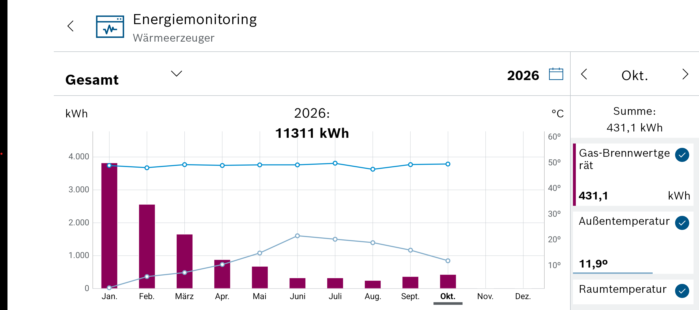
Gasverbrauch Januar bis Oktober 2026 mit Temperaturlinien.
Die Säulen fallen von Winter auf Sommer deutlich und steigen im Oktober wieder; im rechten Panel stehen die Oktober-Summe, die Außentemperatur von 11,9 °C und die Raumtemperatur. Die Werte im Diagramm sind grob abgelesen.
Datenquelle des Frischluft-Indikators ist OpenWeather. Temperatur 20,0° und Luftfeuchtigkeit 57 %.
Teil 5 · Block C · Praxis-Screenshots
Kamera Hauseingang
Videoaufnahme mit Zeitangabe 2025-05-21.
Keine Anbieterzuordnung erkennbar. Im Bild oben sind zwei dunkle Flugobjekte zu sehen, vermutlich Vögel.
Home Assistant
Home Assistant
Viele Protokolle sprechen nicht miteinander – eine Software und ein Server vereinen die verschiedenen Dienste und Anbieter. Home Assistant ist dafür ein Beispiel.
Es gibt eine Fülle an Protokollen auf dem Markt, die nicht miteinander kommunizieren. Deshalb ist eine Software sinnvoll, die die Dienste und Anbieter vereint. Home Assistant ist dafür ein Beispiel.
Hoher Datenschutz: Sensordaten und Kamerastreams bleiben im Haus
Vier Grundprinzipien: Open Source, lokaler Fokus, Herstellerunabhängigkeit und Datenschutz. Als Nächstes: auf welcher Hardware das läuft.
Home Assistant
Hardware für Home Assistant OS
Home Assistant OS ist ein eigenständiges Linux Betriebssystem auf einem lokalen Server. Es hat nur geringe Anforderung an Hardware.
Einplatinencomputer
Sehr beliebt auf dem Raspberry Pi 4 oder 5.
Mini-PCs
x86-Plattformen wie ein Intel NUC oder gebrauchte Office-PCs (Thin Clients), die mehr Leistung bieten.
Fertigsysteme
Hauseigene Hardware wie der Home Assistant Green oder Yellow.
Virtuelle Maschinen (VM)
Für fortgeschrittene Nutzer läuft HAOS auch hervorragend als VM auf Server-Systemen wie Proxmox.
Vier Wege, Home Assistant OS zu betreiben: Einplatinencomputer, Mini-PC, Fertigsystem oder VM. Die Anforderungen an die Hardware sind gering. Zu Raspberry Pi und Proxmox gibt es gleich je ein Bild.
Hardware
Einplatinencomputer: Raspberry Pi
Der Raspberry Pi ist die Einplatinencomputer-Option als Hardwarebasis für Home Assistant OS. Die Zeichnung zeigt schematisch Platine, Kühlkörper, Anschlüsse und Netzteil.
Hardware
Virtuelle Maschine auf Proxmox
Home Assistant OS läuft auch als virtuelle Maschine auf einem Server, hier mit Proxmox. Gedacht für fortgeschrittene Nutzer.
Home Assistant
Unterschied zu anderen Varianten (z.B. Docker / Core)
Docker (Home Assistant Container)
Das Linux-Betriebssystem und alle Updates verwaltest du selbst über die Kommandozeile.
Home Assistant OS (HAOS)
HAOS nimmt dir diese Arbeit komplett ab. Dafür ist das System „abgeriegelt“: Du kannst keine anderen, Smart-Home-fremden Programme installieren.
Docker bedeutet mehr Kontrolle, aber auch Betriebssystem und Updates selbst verwalten. HAOS ist bequemer, dafür geschlossen.
Home Assistant
Home Assistant: Integrationen
Die nachgezeichnete Integrationsseite zeigt die Herstellerunabhängigkeit der Plattform: Kacheln unterstützter Systeme wie Philips Hue, Shelly, Sonos, Matter, Z-Wave und Zigbee Home Automation.
Home Assistant
Home Assistant: Dashboard
Das Dashboard besteht aus frei gestaltbaren Karten, zum Beispiel für Beleuchtung, Thermostat, Sicherheit und Unterhaltung.
Home Assistant
Home Assistant auf Smartphone und Smartwatch
Die Steuerung ist mobil auf Handy und Uhr möglich. Die App zeigt Kacheln für Licht, Temperaturen und Kamera-Vorschauen.
Home Assistant
Home Assistant: Wanddisplay / Tablet-Dashboard
Ein fest installiertes Wanddisplay mit individuellen Räumen und Statusinformationen. Das Dashboard ist hier nach Räumen gegliedert.
Demo · zum Ausprobieren
Smart Home OS
Smart Home OSWohnzimmer · lokal · simulierte Uhr
19:500 W
Sonnig21 °CAbend
Klimaaus
21,0 °CIst 19,2 °C
Jalousieoffen
0 %
Lichtaus
Dimmer Decke
70 %
Steckdosenaus
Szenen
WetterSonnig · 21 °C
TageszeitAbend · 19:50
ZeitrafferMinuten pro Sekunde
Lokal · läuft ohne Internet
Live-Demo einer Smart-Home-Oberfläche als Vollbild, läuft komplett offline im Browser, ohne Server-Logik und ohne echte Geräte. Oben links das Haus im Garten: Der Himmel, Sonne und Mond, Wolken, Regen, Schnee und Gewitter folgen der simulierten Uhrzeit und dem gewählten Wetter; die Fenster leuchten, wenn drinnen das Licht an ist (Wohnzimmer, Schlafzimmer, Küche bei laufender Kaffeemaschine), nachts deutlich stärker. Das Außenlicht (Garten- und Hauslampe) leuchtet im Dunkeln, der Lüfter der Wärmepumpe dreht sich, solange die Klimaanlage arbeitet, und beim Heizen steigt Rauch aus dem Schornstein. Die Jalousie fährt im Wohnzimmerfenster des Hauses mit. Unten links das Dashboard mit drei Reitern. Reiter „Geräte“: Klima (Heizen/Kühlen, Solltemperatur in 0,5-°C-Schritten, die Ist-Temperatur läuft simuliert hinterher), vier Lichter (Deckenlicht dimmbar, Stehlampe, Schlafzimmer, Außenlicht), zwei Zwischenstecker (Kaffeemaschine, Fernseher) und die Jalousie mit Auf/Stopp/Ab. Sobald der Fernseher läuft, spielt er eine kleine Endlosanimation ab (Landschaft mit wechselnder Himmelsfarbe, wandernder Sonne und Wolke, scrollenden Hügeln und einem Fortschrittsbalken), im Haus flackert dazu das Wohnzimmerfenster bläulich. Die Szenen zeigen, dass ein Tastendruck mehrere Geräte zugleich schaltet: „Morgen“ öffnet die Jalousie, Licht auf 100 %, Kaffeemaschine an, Heizen auf 21 °C; „Kino“ schließt die Jalousie, Stehlampe und TV an; „Alles aus“ schaltet Licht, Steckdosen und Klima ab. Reiter „Routinen“: Eine Routine ist ein gespeicherter Satz von Aktionen mit einem Auslöser, nämlich einer Uhrzeit, Sonnenauf- und -untergang, einer Raumtemperatur, einem Wetterwechsel oder einem Knopfdruck. Vorgegeben sind „Guten Morgen“ (07:00: Jalousie auf, Licht 100 %, Kaffeemaschine an, Heizen auf 21 °C), „Außenlicht-Automatik“ (Außenlicht an bei Sonnenuntergang um 20:30 Uhr, aus bei Sonnenaufgang um 06:30 Uhr), „Kino-Abend“ (20:00: Jalousie zu, Stehlampe und TV an), „Gute Nacht“ (22:30: alles aus, Jalousie zu), „Hitzeschutz“ (Raumtemperatur über 24 °C: Jalousie auf 70 % zu, Klima kühlt auf 22 °C) und „Gewitterschutz“ (bei Gewitter: Jalousie zu, Kaffeemaschine und Fernseher aus). Jede Routine lässt sich mit dem Schalter pausieren und mit dem Pfeil sofort starten; „Zustand als Routine speichern“ legt aus dem aktuellen Zustand eine eigene Routine an (bis zu acht insgesamt, mit dem Kreuz wieder löschbar). Reiter „Umwelt“: Wetter wählen (Sonnig, Bewölkt, Regen, Gewitter, Schnee), die Tageszeit springen (Sonnenaufgang, Mittag, Sonnenuntergang, Nacht) und die Geschwindigkeit der Uhr einstellen. Die Uhr oben ist simuliert und startet bei 19:50; sie läuft erst nach Druck auf die Wiedergabetaste, „Vorspulen“ springt fünf Minuten vor die nächste Zeit-Routine und startet sie. Für den Hitzeschutz im Reiter „Geräte“ Heizen wählen und die Solltemperatur auf 26 °C stellen: Sobald die Raumtemperatur 24 °C überschreitet, greift die Routine, kühlt und fährt die Jalousie teilweise zu. Die Außentemperatur folgt Tageszeit und Wetter und wirkt auf die Raumtemperatur, wenn die Klimaanlage aus ist. Das Banner über dem Wohnzimmer zeigt, welche Routine oder Szene zuletzt gelaufen ist, darunter steht das Ereignisprotokoll, wie es auch eine echte Zentrale führt. Die Watt- und Temperaturangaben sind Beispielwerte, keine Messungen. Tasten auf der Folie fangen den Klick ab, weitergeblättert wird mit Pfeiltaste oder Klick neben die Oberfläche.
Home Assistant
Fazit Home Assistant
Home Assistant bietet maximale Freiheit, absolute Datensicherheit und wächst flexibel mit jedem Projekt – vom Einsteiger bis zum Experten.
Das Fazit bezieht sich nur auf Home Assistant. Das Gesamt-Fazit des Vortrags folgt später im Schlussteil („Die vier Sätze, die aus diesem Vortrag bleiben sollten“).
TEIL 6 · WORKSHOP
Workshop: drei Fälle
Interaktiver Teil: drei Aufgaben, jede mit anschließender Auflösung.
Kapitelwechsel: Ab jetzt ist das Publikum gefragt. Drei Aufgaben, jeweils mit Auflösung im Anschluss.
TEIL 6 · WORKSHOP
Drei Fälle, absteigende Eingriffstiefe
Neubau — Einfamilienhaus wird neu errichtet
Kernsanierung — Einfamilienhaus Baujahr ~1960 wird saniert
Mietwohnung — Eigentums- oder Mietwohnung wird nachgerüstet
Reihenfolge nach absteigender Eingriffstiefe. Der Neubau kommt zuerst, weil er die Referenz ist: Die Sanierungs-Folien erklären jeden Punkt als Vergleich zum Neubau.
WORKSHOP · RASTER
Das Raster für alle drei Fälle
Alle drei Fälle werden nach demselben Raster durchgegangen. So ist vergleichbar, was in welchem Fall möglich ist — und was nicht.
1. Infrastruktur
2. Heizung, Lüftung & Klima
3. Beleuchtung & Beschattung
4. Sicherheit & Zutritt
Dieses Raster wiederholt sich in jedem der drei Fälle. Die nächsten beiden Folien zeigen die Werte im Vergleich; sie sind aus den späteren Detailfolien abgeleitet.
Verweis auf die frühere Folie: Bus-Systeme sind ideal für Neubau und Kernsanierung. Jetzt geht es Gewerk für Gewerk durch das Raster.
FALL 1 · NEUBAU
Infrastruktur (Das Fundament)
Bus-System (KNX oder Loxone): grüne KNX-Busleitungen zu allen Schaltern, Sensoren, Präsenzmeldern
Weltweiter Standard: extrem stabil, autark vom Internet, hält jahrzehntelang
Sternverkabelung: Lichtauslässe, Steckdosen und Rollladenmotoren direkt in den zentralen Schaltschrank
Tiefe Unterputzdosen: überall tiefe Elektronikdosen (z.B. von Kaiser) für spätere Aktoren oder smarte Klemmen
Alle Leitungen laufen sternförmig im Schaltschrank zusammen. Tiefe Dosen halten die Nachrüstung von Aktoren oder smarten Klemmen offen.
FALL 1 · NEUBAU
Infrastruktur: Netzwerk (Forts.)
In jedes Zimmer mindestens zwei Cat.7 oder Cat.8 Netzwerkkabel
Kabelauslässe an den Decken für zentrale WLAN-Access-Points (PoE) einplanen
Ziel: perfekter Empfang im ganzen Haus
Netzwerk-Infrastruktur gehört von Anfang an in die Planung, auch die Deckenauslässe für die Access-Points.
FALL 1 · NEUBAU
Infrastruktur: Statik und Schaltschrank (Forts.)
Statik, Wände und Schlitze klopfen
Der Architekt plant Schlitze und Durchbrüche direkt im Beton oder Mauerwerk ein. Kabeltrassen laufen über den Rohboden, bevor der Estrich gegossen wird; es gibt keine Einschränkungen bei Schaltern oder Displays.
Platz für den Schaltschrank
Der Hausanschlussraum wird von Anfang an groß genug geplant. Ein smarter Schaltschrank ist oft doppelt oder dreimal so groß wie ein Standard-Zählerkasten, da alle Aktoren und Netzteile dort Platz finden müssen.
Im Neubau gibt es hier keine Einschränkungen. In der Kernsanierung werden diese beiden Punkte zu den Knackpunkten.
FALL 1 · NEUBAU
Heizung, Lüftung & Klima (HVAC)
Smarte Heizungsaktoren: Einzelraumregelung ist Pflicht
Kabelgebundene Stellventile im Heizkreisverteiler arbeiten präziser als Funk-Thermostate
Raumklimasensoren: dezente Taster mit Temperatur- und Luftfeuchtigkeitssensoren statt klobiger Thermostate
Schnittstelle zur Wärmepumpe / Lüftungsanlage: Modbus, LAN oder SG-Ready-Kontakte
So wird PV-Strom optimal genutzt
Stellventile werden zentral über Smart-Home-Aktoren gesteuert. Auf die Schnittstelle der neuen Heizung achten.
FALL 1 · NEUBAU
HVAC: Fußbodenaufbau und Heizung (Forts.)
Fußbodenaufbau (Dämmung + Estrich) ist hoch genug, meist 14–16 cm
Kabel und Rohre der Fußbodenheizung haben nebeneinander perfekt Platz
Im Neubau passen Kabel und Heizungsrohre problemlos in den Bodenaufbau. In der Kernsanierung ist das die Grenze.
FALL 1 · NEUBAU
Beleuchtung & Beschattung
Zentrale Dimm-Aktoren: 24V-LED-Beleuchtung (DALI oder KNX), dimmbar und flackerfrei
Netzteile sitzen im Schaltschrank, nicht in der Decke
Rollladen- / Jalousiemotoren: einfache, robuste 230V-Motoren ohne eigenen Funk
Intelligenz im Schaltschrank: Steuerung nach Sonnenstand, Raumtemperatur und Windwächter
Die Intelligenz sitzt zentral im Schaltschrank, nicht im Motor. So ist die Beschattung vollautomatisch steuerbar.
FALL 1 · NEUBAU
Beleuchtung & Beschattung (Forts.)
Präsenzmelder statt Bewegungsmelder
In Durchgangsräumen (Flur, Bad, Küche, Abstellraum) echte Präsenzmelder an der Decke einplanen. Sie erkennen auch, wenn du still am Schreibtisch sitzt oder in der Badewanne liegst, und machen klassische Lichtschalter fast überflüssig.
Fenster und Verschattung
Fensterkontakte (Reed-Kontakte) und die Stromzuleitungen für Raffstores/Rollläden werden direkt ab Werk in die Maße der Rohbauöffnungen integriert.
Die Fensterkontakte gehören funktional zu Sicherheit & Zutritt, werden aber im selben Arbeitsgang mit der Verschattung bestellt und stehen deshalb hier.
FALL 1 · NEUBAU
Sicherheit & Zutritt
Motorschloss: kabelgebunden (z.B. von Fuhr oder KFV) direkt in die Haustür einbauen
Mit Fingerprint-Reader oder Keypad schlüssellos und sicher öffnen
Fensterkontakte: neue Fenster ab Werk mit kabelgebundenen Reed-Kontakten im Rahmen bestellen
Status offen, gekippt, verriegelt — essenziell für Alarmanlage und Heizungsabschaltung beim Lüften
Tür und Fenster: Das Schloss und die Reed-Kontakte werden von Anfang an kabelgebunden eingeplant.
FALL 1 · NEUBAU
Sicherheit & Zutritt: Kameras (Forts.)
PoE-Kabel (Power over Ethernet) an den Hausecken einplanen
Kabelgebundene Kameras sind absolut manipulationssicher
Sie benötigen keine Batterien
Letztes Gewerk im Raster. Übergang: Drei Planungs-Tipps, die über alle Gewerke hinweg gelten.
FALL 1 · NEUBAU
Wichtige Planungs-Tipps für die Praxis
1. Gewerkeübergreifend denken
Lass den Elektriker und den Heizungsbauer nicht isoliert arbeiten. Die Heizung muss wissen, was die Verschattung tut, und das Licht muss mit den Präsenzmeldern harmonieren.
2. Der „Alles-Aus“-Schalter
Plane neben der Haustür und dem Ehebett einen Taster ein, der mit einem Klick das gesamte Licht im Haus ausschaltet, die Heizung absenkt und die Beschattung in den Nachtmodus versetzt.
3. Leerrohre, Leerrohre, Leerrohre
Man kann nie genug haben. Vor allem zum Dachboden (für spätere PV-Anlagen) und in den Garten/Garage (für Wallboxen und Außenbeleuchtung).
Diese drei Tipps gelten für die Kernsanierung genauso. Dort wiegt Tipp 3 doppelt: Jedes Leerrohr, das jetzt nicht gelegt wird, bedeutet später wieder aufgeschlitzte Wände.
FALL 2 · AUFGABE
Einfamilienhaus Baujahr ~1960 wird saniert
Welche Nachrüstung ist möglich?
Welcher Übertragungsweg?
Welche Smarthome Komponenten machen in euren Augen Sinn?
Hier ist das Publikum dran: Fragen einzeln einblenden, antworten lassen, Ideen sammeln. Die Lösung folgt auf den nächsten Folien.
FALL 2 · KERNSANIERUNG
Kernsanierung als Chance
Einmalige Chance: Komponenten direkt unter Putz verlegen
Kabelgebundene, zukunftssichere Basis
Spart später teure Batteriewechsel
Verhindert Funklöcher
Steigert den Wiederverkaufswert der Immobilie massiv
Die Gewerke-Übersicht für die Kernsanierung steht bereits auf den Neubau-Folien und gilt unverändert, weil beide Fälle ein kabelgebundenes System erlauben. Danach zeigen wir nur noch, wo die Kernsanierung vom Neubau abweicht.
FRAGE · SANIERUNG VS. NEUBAU
Unterscheidet sich die Planung: Sanierung gegenüber Neubau?
Hier ist das Publikum dran: Meinungen einsammeln, bevor die Antwort kommt.
ANTWORT · SANIERUNG VS. NEUBAU
Ja, die Planung unterscheidet sich
In einigen wesentlichen Punkten, obwohl beide Projekte die Chance auf ein kabelgebundenes System (wie KNX oder Loxone) bieten.
Neubau
Du planst auf einem weißen Blatt Papier.
Kernsanierung
Du musst immer mit der bestehenden Substanz klar kommen.
Auflösung der Frage. Die folgenden Folien gehen Gewerk für Gewerk durch, wo die Kernsanierung vom Neubau abweicht.
FALL 2 · KERNSANIERUNG
Infrastruktur: Statik, Wände und Schlitze klopfen
Statik setzt Grenzen: tragende Wände und alte Betondecken nicht unbegrenzt horizontal aufschlitzen
Dicke Kabelbündel lassen sich so oft nicht verlegen
Ausweichen auf Abhängdecken (Trockenbau) oder Vorsatzschalen für Busleitungen und Sternverkabelung
Im Neubau: Schlitze und Durchbrüche von Anfang an eingeplant
Kabeltrassen über den Rohboden, keine Einschränkung bei der Platzierung von Schaltern
In der Kernsanierung setzt die Statik die Grenze fürs Schlitzen. Zum Vergleich der Neubau, wo der Architekt Schlitze und Durchbrüche von Anfang an einplant.
FALL 2 · KERNSANIERUNG
Infrastruktur: Platz für den Schaltschrank („Gehirn-Raum“)
Platzmangel ist das größte Problem
Neuer, riesiger Schaltschrank muss oft in engen Kellerflur oder Nische
Extrem präzise Platzplanung im Vorfeld nötig
Manchmal Aktoren dezentral in tiefe Elektronikdosen in die Räume auslagern
Im Neubau: Hausanschlussraum von Anfang an groß genug geplant
Im Neubau ist der Hausanschlussraum groß genug für alle Aktoren und Netzteile. In der Kernsanierung entscheidet die Platzplanung vorab.
FALL 2 · KERNSANIERUNG
HVAC: Fußbodenaufbau und Heizung
Raumhöhe oft begrenzt, alter Estrich nicht beliebig dick ersetzbar
Bei nachträglicher Fußbodenheizung oder Dünnbettsystem: kein Platz auf dem Boden für Smart-Home-Kabel
Kabel müssen komplett über Decke oder Wände umgeleitet werden
Im Neubau: Fußbodenaufbau meist 14–16 cm hoch, Kabel und Heizungsrohre nebeneinander
Die Fußbodenheizung wird nachträglich eingefräst oder als Dünnbettsystem genutzt. Dann bleibt für Kabel nur der Weg über Decke oder Wände.
FALL 2 · KERNSANIERUNG
Beleuchtung & Beschattung: Fenster und Verschattung
Alte Fensterstürze (oft massiver Beton) bleiben erhalten
Dann extrem wenig Platz für elektrische Rollladenkästen
Kabel für Fensterkontakte nachträglich in bestehende Rahmen einbohren
Erfordert chirurgische Präzision, damit die Dichtigkeit nicht leidet
Im Neubau: Reed-Kontakte und Stromzuleitungen für Raffstores/Rollläden ab Werk integriert
Im Neubau werden Reed-Kontakte und Zuleitungen ab Werk in die Maße der Rohbauöffnungen integriert. In der Kernsanierung geht das nur mit Präzisionsarbeit am Bestand.
FALL 2 · KERNSANIERUNG
Sicherheit & Zutritt
Motorschloss in der Haustür: unverändert möglich wie im Neubau
Fensterkontakte: nur unproblematisch, wenn auch die Fenster neu bestellt werden
Bleiben die alten Rahmen, müssen die Kabel nachträglich eingebohrt werden
PoE-Kameras an Hausecken: möglich, wenn Weg für Kabelführung nach außen existiert
Präsenzmelder an der Decke: nur mit abgehängter Decke oder Vorsatzschale wirtschaftlich
Diese Folie ist abgeleitet, nicht aus dem Original übernommen; sie schließt die Lücke im Raster für alle drei Fälle. Die Haustür wird bei einer Kernsanierung in der Regel ohnehin ersetzt; als Kabelwege nach außen kommen Leerrohr, Durchbruch oder Fassadendämmung im gleichen Zug in Frage.
FALL 2 · KERNSANIERUNG
Hybrid-Lösung: Der Geheimtipp für die Kernsanierung
Schlitzen ist bei einer Sanierung extrem aufwendig und teuer, deshalb planen viele Sanierer ein Hybrid-System.
Kabel (Bus)
Für die kritischen, unbeweglichen Infrastrukturen: Schaltschrank, Heizungsventile, Rollladenmotoren und Decken-Präsenzmelder.
Funk
Z.B. KNX-RF oder Homematic IP wired/funk kombiniert für die Lichtschalter an den Wänden. Kein vertikales Aufschlitzen mehr, stattdessen flache Funktaster aufkleben.
Kabel dort, wo es nicht anders geht, Funk für die Wandschalter. Damit spart man sich das Aufschlitzen der Wand zu jedem einzelnen Lichtschalter.
FALL 3 · AUFGABE
Aufgabe: Eine Eigentums- oder Mietwohnung wird nachgerüstet
1. Welche Nachrüstung ist möglich?
2. Welcher Übertragungsweg?
3. Welche Smarthome Komponenten machen in euren Augen Sinn?
Aufgabenfolie: Hier ist das Publikum dran, keine Lösung vorwegnehmen. Fragen nacheinander einblenden und Antworten sammeln, bevor es mit der Mietwohnung weitergeht.
FALL 3 · MIETWOHNUNG
Mietwohnung: Ausgangslage
Kabelgebundene Systeme wie KNX oder Loxone sind komplett vom Tisch
Funk-Smart-Home ist hier der perfekte Weg
Alles wird geklebt, gesteckt oder zerstörungsfrei ausgetauscht
Beim Auszug nimmst du alles rückstandslos mit ins neue Zuhause
Die folgenden Optionen machen am meisten Sinn, ohne Ärger mit dem Vermieter
Titel der Folie ist ergänzt, im Original gab es keine Überschrift. Übergang zu den Gewerken in der Mietwohnung, beginnend mit dem Funksystem.
FALL 3 · MIETWOHNUNG
Infrastruktur: Das passende Funksystem wählen
Setze auf etablierte Funkstandards, damit du herstellerunabhängig bleiben kannst.
Matter & Thread
Der neueste, zukunftssicherste Standard. Geräte verschiedener Marken (Apple, Google, Amazon, Eve etc.) arbeiten direkt und extrem schnell zusammen.
Zigbee
Der absolute Klassiker für smarte Beleuchtung und Sensoren (z.B. Philips Hue, IKEA Dirigera, Aqara). Extrem energiesparend, baut ein stabiles „Mesh-Netzwerk“ von Gerät zu Gerät auf.
Homematic IP / Bosch Smart Home
Eigenständige Funksysteme, die ein eigenes Frequenzband nutzen. Extrem zuverlässig für Heizung und Sicherheit.
Drei etablierte Funkstandards zur Auswahl. Die nächste Folie zeigt, was in der Mietwohnung gegenüber Neubau und Sanierung entfällt.
FALL 3 · MIETWOHNUNG
Infrastruktur: Was entfällt
Bus-System (KNX/Loxone)
Sternverkabelung in den Schaltschrank
Tiefe Unterputzdosen
Verlegte Netzwerkkabel
PoE-Access-Points in der Decke
Jeder dieser Punkte erfordert einen Eingriff in die Bausubstanz und ist in der Mietwohnung nicht möglich. Das Funksystem ist hier die Infrastruktur.
Entfällt gegenüber Neubau und Sanierung. Entscheidend: Das Funksystem von der vorigen Folie ersetzt die gesamte Infrastruktur.
FALL 3 · MIETWOHNUNG
Heizung & Klima
Smarte Heizkörperthermostate: bringen in Mietwohnungen oft die größte Ersparnis
Altes Thermostat per Hand (oder Rohrzange) ab-, neues anschrauben
Z.B. Eve Thermo, Homematic IP oder tado°
Wichtig: Die alten Thermostate unbedingt aufbewahren
Die größte Ersparnis in der Mietwohnung kommt aus smarten Heizkörperthermostaten. Alte Thermostate fürs Zurückbauen beim Auszug aufheben.
FALL 3 · MIETWOHNUNG
Heizung & Klima: Was entfällt
Kabelgebundene Stellventile im Heizkreisverteiler
Zentrale Heizungsaktoren im Schaltschrank
Taster mit integrierten Raumklimasensoren
Schnittstelle zur Wärmepumpe oder Lüftungsanlage (Modbus / SG-Ready)
Alles setzt Zugriff auf Anlagentechnik voraus, die nicht dem Bewohner gehört
Funk-Thermostate arbeiten weniger präzise als kabelgebundene Stellventile: der Preis der Rückbaubarkeit.
Alles Entfallende setzt Zugriff auf die Anlagentechnik voraus. Die geringere Präzision der Funk-Thermostate ist der Preis der Rückbaubarkeit.
FALL 3 · MIETWOHNUNG
Beleuchtung & Strom
Smarte Leuchtmittel (Plug & Play)
Vorhandene Glühbirnen gegen smarte LEDs tauschen (z.B. Philips Hue oder IKEA Tradfri). Alte Leuchtmittel für den Auszug aufbewahren.
Smarte Zwischenstecker (Plugs)
Machen Stehlampen, Kaffeemaschinen oder Ventilator fit fürs Smart Home. Einfach in die Steckdose stecken.
Smarte Schalter zum Überkleben
Halterungen oder flache Funktaster (z.B. von Hue oder Senic) über oder neben die alten Schalter kleben. So schaltet niemand smarte Lampen stromlos und offline.
Drei Bausteine für Licht und Strom ohne Eingriff in die Wohnung. Der geklebte Schalter verhindert, dass jemand den physischen Lichtschalter ausschaltet und die smarten Lampen offline gehen.
FALL 3 · MIETWOHNUNG
Beleuchtung & Strom: Was entfällt
Die gesamte Beschattung: Rollladen- und Jalousiemotoren, Windwächter, Sonnenstands-Automatik
Beschattung gehört zum Gebäude, nicht zur Wohnung: Gewerk entfällt vollständig
Zentrale Dimm-Aktoren im Schaltschrank, 24V-DALI/KNX-Beleuchtung
Decken-Präsenzmelder (Bohren in die Decke, Stromzuführung)
Ersatz: freistehende oder geklebte Funk-Bewegungsmelder
Einschränkung: Bewegungsmelder erkennen stillsitzende Personen nicht.
Die Beschattung entfällt als Gewerk komplett. Für Präsenzmelder gibt es nur den Ersatz durch Funk-Bewegungsmelder, mit der bekannten Einschränkung.
FALL 3 · MIETWOHNUNG
Zutritt & Sicherheit
Smarte Türschlösser (Nachrüst-Sets): Nuki Smart Lock oder Yale Linus
Von innen auf den bestehenden Schließzylinder aufgesetzt, oft nur geklemmt oder geklebt
Von außen sieht man nichts, der Schlüssel funktioniert weiter, kein Schloss tauschen
Geklebte Sensoren: Fenster- und Türkontakte sowie Bewegungsmelder (Aqara, Eve)
Winzig und mit spurlos ablösbaren Klebestreifen befestigt
Titel aus dem Original übernommen, vierte Position im Gewerke-Raster. Nachrüst-Schloss und geklebte Sensoren hinterlassen keine Spuren.
FALL 3 · MIETWOHNUNG
Zutritt & Sicherheit: Was entfällt
Kabelgebundenes Motorschloss in der Haustür
Wohnungstür darf nicht umgebaut werden, Haustür gehört allen Mietern
Reed-Kontakte ab Werk im Fensterrahmen
PoE-Überwachungskameras an den Hausecken
Außenkameras erfassen Gemeinschaftsflächen und Nachbarn: kein Alleingang des Mieters
Vorher mit Vermieter und Hausgemeinschaft klären, was zulässig ist.
Hier ist vorher mit Vermieter und Hausgemeinschaft zu klären, was zulässig ist. Außenkameras sind in einem Mehrparteienhaus kein Alleingang des Mieters.
Gegenstück zur Bilanz: Was pro Gewerk in der Mietwohnung geht. Übergang zur Leitlinie für diesen Fall.
FALL 3 · MIETWOHNUNG
Die Leitlinie für diesen Fall
Leitlinie
Alles muss rückstandslos entfernbar sein. Geklebt, gesteckt oder von Hand getauscht, nichts gebohrt, nichts geschlitzt, nichts an der Anlagentechnik.
Preis dafür
Geringere Präzision bei der Heizungsregelung, Batterien statt Dauerstrom, kein Zugriff auf Beschattung und Anlagentechnik.
Vorteil dafür
Beim Auszug zieht das ganze Smart Home mit um. Bei KNX bleibt es in der Wand.
Abschluss von Fall 3: rückstandslos entfernbar, Preis und Vorteil nebeneinander. Pointe: Beim Auszug zieht das Smart Home mit um, bei KNX bleibt es in der Wand.
Kabel, wo möglich; sonst Hybrid: Bus für Festinstallation + Funk für Wandtaster.
Statik und Platz setzen Grenzen; Schlitzen ist der Kostentreiber.
Mietwohnung
Funk: Matter/Thread oder Zigbee.
Lokal, energiesparend, rückstandslos entfernbar.
Die Systemwahl folgt aus dem Gebäude, nicht aus der Vorliebe. Die drei Workshop-Fälle aus Teil 6 sind hier zusammengeführt. Weiter mit den zwei Sonderfällen.
Entscheidungshilfe · weitere Fälle
Welches System für welchen Fall?
Einzelne Geräte, Einstieg, Budget
WLAN: Tuya — bewusst und nur für Unkritisches.
Sehr günstig, riesige Auswahl, aber Cloud-Zwang.
Datenschutz ist das Hauptkriterium
Übertragungsweg beliebig: lokale Zentrale: Home Assistant, oder deutscher Anbieter (Teil 5, Block A).
Daten verlassen das Haus nicht.
Zwei Fälle, die quer zur Gebäudefrage liegen: Einstieg mit kleinem Budget und Datenschutz als Hauptkriterium. Tuya nur für Unkritisches.
Entscheidungshilfe
Die drei Fragen, die die Entscheidung tragen
Wie tief darf ich in das Gebäude eingreifen? → Kabel oder Funk
Muss das System ohne Internet funktionieren? → lokal oder Cloud
Über welchen Zeitraum soll es halten? → Bus/lokal (Jahrzehnte) oder Cloud (Serverbetrieb)
Faustregel: Je unbeweglicher die Komponente, desto eher Kabel. Je kritischer die Funktion (Türschloss, Kamera, Heizung), desto eher lokal.
Drei Fragen genügen für die Vorentscheidung. Die Faustregel zum Mitnehmen: unbeweglich gleich Kabel, kritisch gleich lokal.
Kosten · Platzhalter
Kosten: Größenordnungen
Alle Zahlen auf dieser Folie sind Platzhalter.
Die Original-Präsentation enthält keine einzige Kostenangabe.
Die Felder müssen vor dem Vortrag mit eigenen, belegbaren Zahlen gefüllt werden — aus Angeboten, Preislisten oder abgerechneten Projekten.
Erfundene Zahlen sind an dieser Stelle schlimmer als keine: Die Kostenfrage kommt im Publikum sofort, eine falsche Zahl beschädigt den ganzen Vortrag.
Hier stehen bewusst keine Beträge. Vor dem Vortrag mit eigenen Angeboten, Preislisten oder abgerechneten Projekten füllen.
Diese Rangfolge steht bereits im Original und braucht keine Preisangabe. Deshalb gibt es für die Sanierung das Hybrid-System: Kostentreiber ist das Schlitzen, nicht die Hardware.
Energieeinsparung · Platzhalter
Energieeinsparung: was noch zu belegen ist
Keine Einsparungszahl im Vortrag belegt.
Effizientere Energienutzung ist einer von vier Zwecken des Smart Homes; das Energiemonitoring zeigt echte Werte.
Eine Einsparungszahl wird nirgends genannt — weder in Prozent noch in Euro noch in kWh.
Diese Folie ist ein Platzhalter. Die Zahl darf nicht geschätzt werden.
Keine Prozentzahl nennen, die nicht belegt ist. Die nächste Folie zeigt, was konkret zu belegen ist. Als Datengrundlage dient das eigene Energiemonitoring (Folien „Energiemonitoring“ im Teil „Praxis-Screenshots“); die Zahl selbst ist noch nicht gerechnet. Die früheren Energie-Folien (Datengrundlage, Vorschlag, Aufhänger) sind entfallen.
„Smarte Thermostate in der Mietwohnung bringen die größte Ersparnis“
Beleg: Messung in mindestens einer Heizperiode.
Status: Aussage steht im Original, unbelegt
„Automatische Beschattung senkt den Kühlbedarf um ___ %“
Beleg: Studie oder Herstellerangabe mit Messmethode.
Status: offen
„Abschaltung beim Lüften über Fensterkontakte spart ___ kWh“
Beleg: Verbrauchsdaten mit/ohne Automatik.
Status: offen
Vier Aussagen, keine davon belegt. Die Thermostat-Aussage zur Mietwohnung steht im Original, ist aber bislang nicht gemessen.
Gesamt-Fazit
Die vier Sätze, die aus diesem Vortrag bleiben sollten
Smart Home ist ein Vier-Schichten-Modell, nicht ein Produkt
Die wichtigste Entscheidung ist lokal gegen Cloud
Der Bau bestimmt die Technik, nicht umgekehrt
Die Risiken sind nicht nur Datenschutz
Vier Kernaussagen, nacheinander einblenden. Auf den folgenden Folien jeweils kurz begründet.
Fazit 1 von 4
Smart Home ist ein Vier-Schichten-Modell, nicht ein Produkt
Feldebene (Sensoren/Aktoren)
Übertragungsebene (Funk oder Kabel)
Steuerungsebene (die Zentrale)
Bedienebene (App, Sprache, Taster)
Wer eine Entscheidung trifft, trifft sie immer auf einer dieser vier Schichten — und meistens auf der zweiten.
Die vier Schichten als Ordnungsrahmen. Entscheidungen fallen meist auf der Übertragungsebene.
Fazit 2 von 4
Die wichtigste Entscheidung ist lokal gegen Cloud
Nicht die Marke, nicht die App, nicht der Preis.
Lokal
Zigbee, Matter, KNX, Home Assistant: funktioniert ohne Internet, Daten bleiben im Haus, Gerät überlebt den Hersteller.
Cloud
Komfort beim Einrichten, Abhängigkeit im Betrieb.
Das ist die zentrale Weichenstellung, wichtiger als Marke, App oder Preis.
Fazit 3 von 4
Der Bau bestimmt die Technik, nicht umgekehrt
Neubau
Kabel
Kernsanierung
Hybrid
Mietwohnung
Funk
Die Eingriffstiefe des Gebäudes entscheidet, nicht die Vorliebe für ein System.
Kurzfassung der Entscheidungshilfe: Der Eingriffstiefe des Gebäudes folgt die Technik.
Fazit 4 von 4
Die Risiken sind nicht nur Datenschutz
Datenschutz, IT-Sicherheit und Lebensdauer sind drei getrennte Risiken.
Ein Gerät kann DSGVO-konform und trotzdem unsicher sein — oder sicher und trotzdem in drei Jahren Elektroschrott.
Drei getrennte Risiken, die man nicht gegeneinander ausspielen darf. Danach folgen die Quellen und die Fragerunde; die Folien „Offene Belege“ sind Arbeitsfolien und vor dem Vortrag zu entfernen oder abzuarbeiten.
Quellen
Im Vortrag verwendete Abbildungen
Screenshots
Alle Screenshots (Xiaomi Home, Google Home, Heizkreis, Energiemonitoring, Wärmeerzeuger, tado°) und die Folie „Beispiel: Automatisierung Keller Bad“ stammen aus der eigenen Installation des Vortragenden.
Eigene Zeichnungen
Titelfolie „Einstieg“, Folie „Kabelsysteme“ (Busleitung, KNX-Schaltschrank) sowie die Folien zu Anbietern, Hardware und Home Assistant: selbst gezeichnet, keine Hersteller- oder Pressebilder.
Fotos
Unsplash: Mark Kats, Aleksandr Lyaptsev, Sou Jest, Turquo Cabbit, Duc Van. Nennung jeweils auf der Folie.
Herkunft der Abbildungen.
Offene Belege · 1 von 5
Offene Belege — vor dem Vortrag zu klären
1 · Hysterese (Folie „Hysterese“)
Definition und Zweck der Hysterese. Das Original verwies auf „[1, 2]“; ein Literaturverzeichnis existiert nicht, die Marker lösen nirgends auf.
Quelle nachzutragen (Fachliteratur Heizungstechnik oder Herstellerdokumentation).
2 · China-Hosting (China-Folie „drei Gründe“)
„Hosten personenbezogener Daten in China … in den allermeisten Fällen unzulässig“ — Formulierung auf der Folie abgeschwächt.
Belegt über die DPC-Entscheidung gegen TikTok vom 02.05.2025 (485 Mio. € nach Art. 46 Abs. 1 DSGVO). Vom High Court im Juni 2026 im Wesentlichen bestätigt, Bußgeldhöhe offen; kein pauschales Verbot.
Kein Angemessenheitsbeschluss der EU-Kommission für China.
Belegt über die Liste der Angemessenheitsbeschlüsse der EU-Kommission (China nicht enthalten).
Belege 1 bis 3. Beleg 1 (Hysterese) ist offen. Die Belege 2 und 3 sind inzwischen mit Quellen unterlegt (Links in den Notizen der China-Folien); vor dem Vortrag gegenprüfen. Die China-Folien sind „Drittland-Risiko am Beispiel China“ und „Drittland-Risiko China: drei Gründe“.
„Artikel 7 des chinesischen Geheimdienstgesetzes“ verpflichtet zur Kooperation.
Belegt über die Übersetzung von China Law Translate (2017, Art. 7). Reichweite der Pflicht umstritten; amtlichen Text gegenprüfen.
5 · TIA-Pflicht (China-Folie „drei Gründe“)
Zwingende TIA-Pflicht und „fast immer negatives Ergebnis“ deutscher Aufsichtsbehörden.
TIA-Pflicht gestützt (Art. 46 DSGVO, EuGH C‑311/18, EDSA 01/2020). „Fast immer“ gestrichen, da nicht belegt.
Belege 4 und 5: Gesetzesartikel und TIA-Aussage. Beide sind inzwischen mit Quellen unterlegt beziehungsweise abgeschwächt; vor dem Vortrag gegenprüfen (Einzelheiten in den Notizen der Folie „Drittland-Risiko China: drei Gründe“).
Offene Belege · 3 von 5
Offene Belege — vor dem Vortrag zu klären
6 · CLOUD Act (Folie „Gefahren und Fallstricke“)
CLOUD-Act-Risiko bei US-Anbietern mit Servern in Frankfurt. Stammt aus der Tabelle der Folie (früher ein Screenshot).
Primärquelle der Tabelle nicht genannt.
7 · IT-Sicherheit (Folie „IT-Sicherheit“)
IT-Sicherheitsgrundsätze (offene Ports, Firmware-Updates, Botnetze). Neu ergänzt, ohne Zitat.
Mit BSI-Empfehlungen zu Smart Home / IoT unterfüttern.
8 · Abgeschaltete Cloud (Folie „Der Härtefall“)
Konkreter Fall einer abgeschalteten Hersteller-Cloud.
Bewusst kein Beispiel benannt, weil die Präsentation keines nennt. Für den Vortrag ein belegtes Beispiel ergänzen.
Belege 6 bis 8: Tabellenquelle, BSI-Empfehlungen und ein belegtes Beispiel einer abgeschalteten Cloud fehlen noch.
Vollständig offen; Datengrundlage aus dem eigenen Energiemonitoring vorhanden.
10a · Takten (keine eigene Folie mehr)
Verhältnis Brennerstarts zu Betriebsstunden. Nicht belegt. Die frühere Folie dazu ist entfallen; die Ausgangswerte wurden aus einem Screenshot abgelesen, nicht exportiert; Zählweise des Geräts unbekannt.
Am Gerät verifizieren, bevor die Zahl im Vortrag genannt wird.
Belege 9, 10 und 10a: Kosten und Einsparungen sind vollständig offen, die Takten-Rechnung ist unbelegt und steht auf keiner Folie mehr.
Offene Belege · 5 von 5
Offene Belege — vor dem Vortrag zu klären
11 · „Moonshot AI (Kimi K3)“ (Anhang, gestrichene Folie)
Modellbezeichnung zweifelhaft — nicht bestätigen.
Die Passage ist aus dem Vortrag herausgenommen; falls sie zurückkehrt, ist die Bezeichnung zu prüfen.
Zuordnung der Screenshots zu Anbietern: teilweise nur aus dem Bildinhalt abgeleitet.
Anbieter vom Vortragenden bestätigen lassen.
Belege 11 und 12: Modellbezeichnung nicht bestätigen, Anbieterzuordnung vom Vortragenden bestätigen lassen.
Quellen
Hinweis zur Rechtslage
Die rechtlichen Aussagen in Teil 4 sind der Original-Präsentation entnommen und in dieser Fassung nicht verschärft und nicht erweitert worden.
Sie sind keine Rechtsberatung.
Für eine belastbare Bewertung eines konkreten Systems ist eine datenschutzrechtliche Prüfung erforderlich.
Ausdrücklich keine Rechtsberatung. Für ein konkretes System braucht es eine datenschutzrechtliche Prüfung.
Fragen / Q&A
Was gern gefragt werden darf
Welches System für meinen konkreten Fall? → „Welches System für welchen Fall?“
Was kostet das? → „Gesamtkosten je Fall“ (Zahlen offen, ehrlich gesagt)
Spart das wirklich Energie? → „Energieeinsparung“ (Messdaten vorhanden, Zahl noch nicht gerechnet)
Was passiert mit meinen Daten? → „Welche Daten verlassen das Haus?“
Erwartbare Fragen mit Verweis auf die passende Folie.
Fragen?
Danke für die Aufmerksamkeit.
Dank und Übergang in die Fragerunde. Das Abschiedsmotiv auf der nächsten Folie hat keinen inhaltlichen Bezug zum Thema.
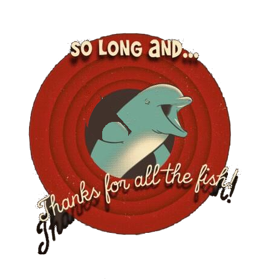
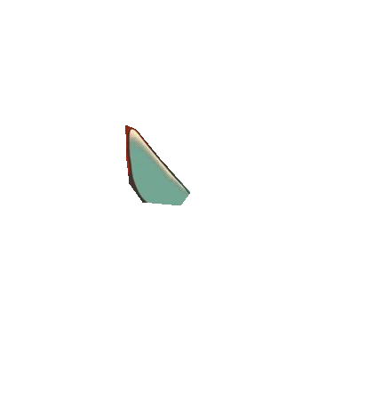
Abschiedsmotiv ganzseitig, ohne inhaltlichen Bezug zum Thema. Der Delfin winkt: Die Flosse ist als eigene Ebene (img-097-061-fin.png) über dem Bild ohne Flosse (img-097-061-base.png) freigestellt und wird per CSS gedreht; das Original liegt unverändert als img-097-061.png vor. Das Bild ist nur 430×460 px groß und wird stark hochskaliert; für den Beamer ggf. höher aufgelöste Fassung einsetzen.